← Index · ← Previous · Next →
Authors: Sk Mujaffar Hossain, Satadeep Bhattacharjee
Type: theory · Category: quantum information and computing · PDF: https://arxiv.org/pdf/2608.14002v1
Analysis basis: full PDF text, analyzed in chunks
Topic relevance: analog quantum simulation 1/5 · quantum measurements 1/5
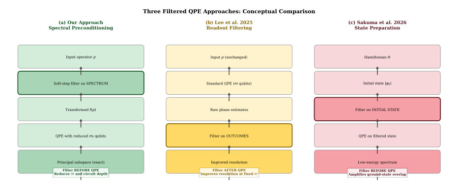
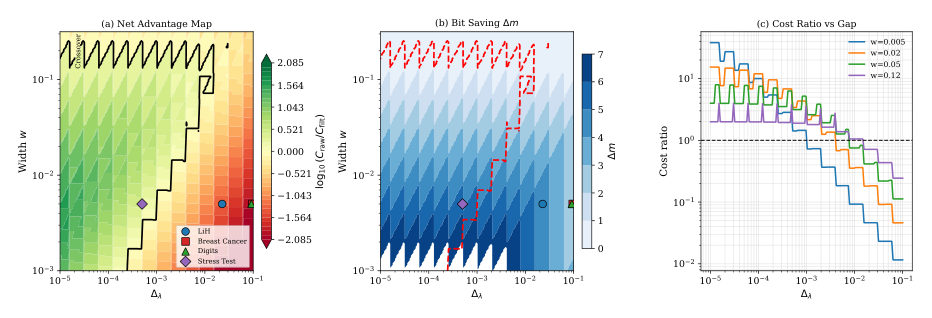
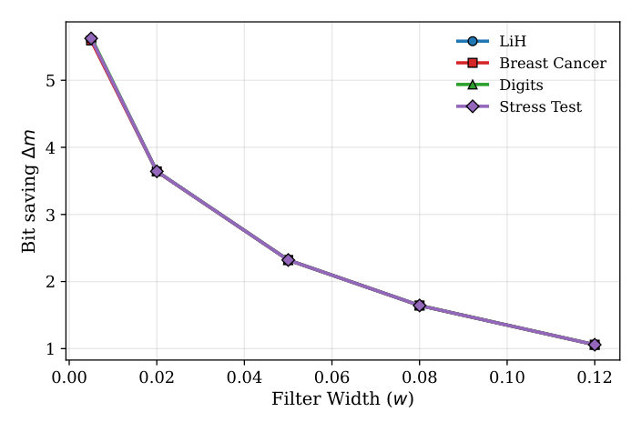
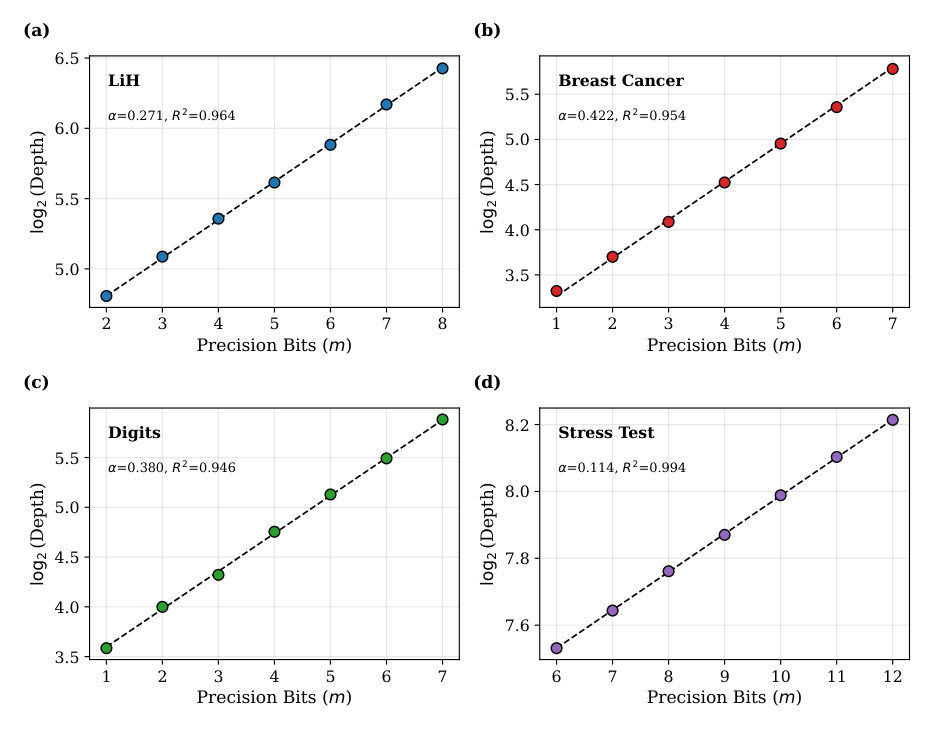
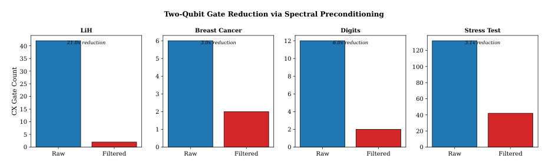
Summary. The paper introduces spectral preconditioning as a method to compress the circuit depth of Quantum Phase Estimation (QPE) circuits. By applying a sigmoid filter to the operator spectrum, it artificially amplifies the effective spectral gap. This results in significant reductions in required qubits and gate count, making quantum simulations feasible on near-term noisy hardware.
Why it may be interesting. This work directly addresses resource scaling in quantum simulation algorithms like QPE, providing a concrete, implementable technique to mitigate hardware limitations imposed by small spectral gaps in chemistry and materials science simulations.
Main problem. The primary goal is to significantly compress the circuit depth required for Quantum Phase Estimation (QPE) circuits, especially when dealing with quantum systems exhibiting small spectral gaps.
Main result. The authors demonstrate that applying a sigmoid spectral filter before QPE amplifies the effective spectral gap, leading to an exact and substantial reduction in required precision qubits and overall circuit depth (up to 27x).
Method. The technique involves preprocessing the input operator spectrum by applying a monotone sigmoid spectral filter $f(\lambda; au, w)$ before running the standard QPE algorithm.
Model / system. The method is applied theoretically to general quantum systems, with concrete validation cases including molecular bond-stretch calculations (LiH, BeH2) and various Quantum Machine Learning datasets.
Key observables. Depth compression factor ($ ext{DC}$), bit saving ($\Delta m$), output fidelity ($F$), and the required minimum gate fidelity for successful computation.
Important parameters / regimes. The spectral gap ($\Delta\lambda$), filter width ($w$), and the initial precision qubits ($m$) are critical parameters determining the resource advantage.
Assumptions / limitations. The compression is proven exact but fails for exactly degenerate spectra; the method requires $\Delta\lambda > 0$ and $m_{ ext{raw}} \ge 2$.
Figures summary. Figures illustrate the comparison of raw vs. filtered QPE performance, showing depth scaling laws ($\log_2( ext{Depth})$ vs $m$), fidelity improvements at fixed error rates, and resource advantage maps.
Paper structure. The paper establishes the theoretical basis for spectral gap amplification, derives the compression bounds, proves the method's exactness, validates it across multiple physical systems (molecules/ML), and concludes with operational guidelines based on noise analysis.
We show that quantum phase estimation (QPE) circuits can be significantly compressed in depth by preprocessing the input operator with a sigmoid spectral filter before estimation. For systems with small spectral gaps Delta_lambda, standard QPE requires m = ceil(log2(1/Delta_lambda)) precision qubits and depth Theta(2^m). Applying a soft-step transformation f(lambda; tau,w) amplifies the effective gap to Delta_f > Delta_lambda (for w < 1/4), reducing the required precision to m_f = ceil(log2(1/Delta_f)) and compressing circuit depth by 2^(alpha Delta_m), where alpha = 1 for the LMR density-matrix exponentiation framework and alpha is in [0.11,0.42] for controlled-phase-gate circuits. We prove that this compression is exact, bounded above by log2(1/(4w Delta_lambda)) + 1, and impossible for exactly degenerate spectra. We further show that the threshold parameter tau requires only O(w) accuracy, so classical preprocessing such as covariance diagonalisation or CASSCF avoids circularity. A net resource advantage occurs when 4w^2(2^Delta_m - 1) > Delta_lambda log(1/epsilon). Validation on LiH and BeH2 bond-stretch calculations, classical covariance datasets, and synthetic near-degenerate cases demonstrates depth reductions of up to 27x and CX-gate reductions of up to 21x. For LiH, QPE output fidelity improves from 0.66 to 0.98 at a 1% hardware error rate. The method preserves the principal subspace to machine precision, requires no modification of QPE, and can be combined with readout-stage and state-preparation filtering. Negative-control tests establish the benefit condition: m_raw >= 2 and Delta_lambda > 0.
Authors: Rachel Houtz, Marco Knipfer, Konstantin Matchev, Alexander Roman, Mia West
Type: theory · Category: numerical methods · PDF: https://arxiv.org/pdf/2608.13691v1
Analysis basis: full PDF text, analyzed in chunks
Topic relevance: analog quantum simulation 1/5 · quantum measurements 1/5
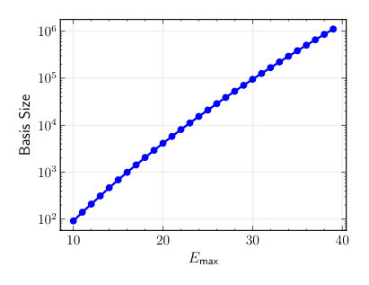
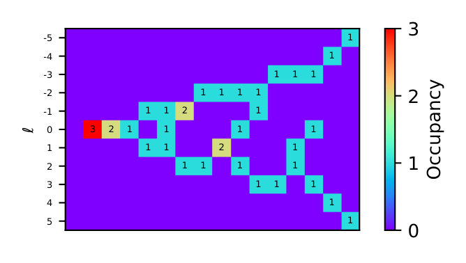
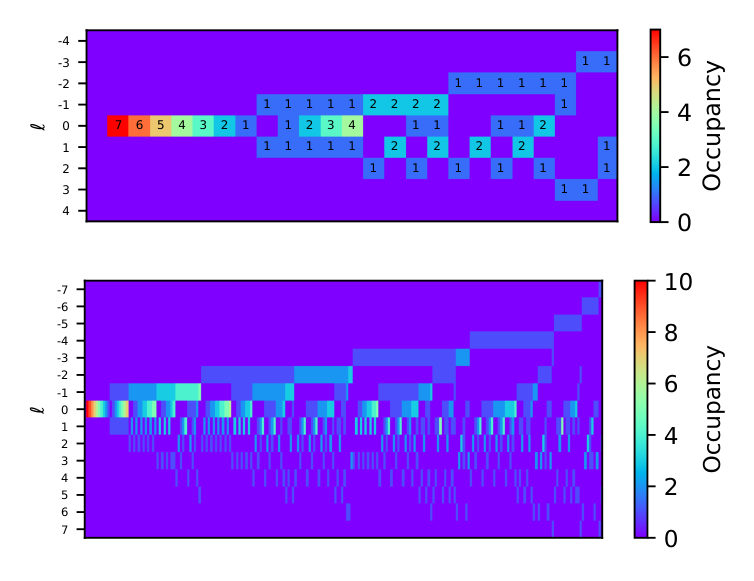
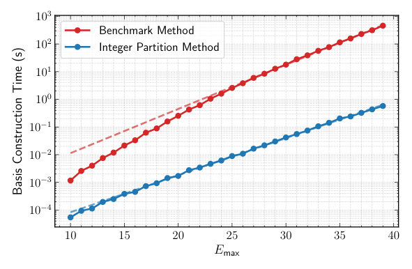
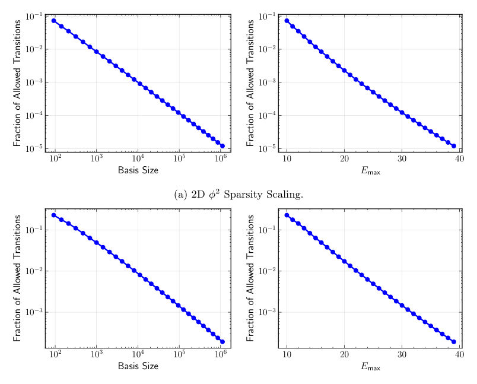
Summary. This paper tackles the computational bottleneck in Hamiltonian truncation, a nonperturbative method for quantum field theory. It introduces an efficient classical pipeline using integer partitions and symmetry rules to build sparse effective Hamiltonians. Finally, it proposes leveraging quantum Krylov diagonalization techniques to extract physical spectra from these massive matrices.
Why it may be interesting. The combination of advanced combinatorial methods (integer partitions) with modern numerical linear algebra techniques (Krylov methods) provides a powerful blueprint for simulating complex many-body Hamiltonians that are intractable via direct diagonalization.
Main problem. The primary challenge is overcoming the exponential growth of computational cost associated with Hamiltonian truncation when simulating quantum field theories in strongly interacting regimes.
Main result. The authors propose and demonstrate a hybrid strategy combining an efficient basis generation scheme based on integer partitions, symmetry-aware matrix construction, and quantum Krylov diagonalization to significantly improve computational efficiency.
Method. The approach involves developing specialized classical algorithms (integer partition method) for constructing the sparse effective Hamiltonian matrix ($ ext{H}_{ ext{eff}}$), followed by using quantum Krylov subspace methods to extract low-lying energy spectra without full diagonalization.
Model / system. The work applies to lattice field theories, specifically benchmarking against the free massive scalar and $\phi^4$ theories in two spacetime dimensions. The Hamiltonian is constructed via truncation based on an energy cutoff ($E_{ ext{max}}$).
Key observables. The low-lying energy spectrum (eigenvalues) of the effective Hamiltonian ($ ext{H}_{ ext{eff}}$), and the computational time required for construction.
Important parameters / regimes. Energy cutoff ($E_{ ext{max}}$), mass parameters ($m_Q, m_V$), coupling constants ($\lambda$), and momentum modes ($\ell$).
Assumptions / limitations. The accuracy relies on the assumption that the effect of discarded high-energy states is small. The analysis also exploits symmetries (e.g., $\mathbb{Z}_2$-parity) to reduce redundant calculations.
Figures summary. Figures illustrate the exponential scaling of basis size with $E_{ ext{max}}$, compare the construction time of new vs. benchmark methods, and show the sparsity pattern of the transition matrix separated into even- and odd-occupancy sectors.
Paper structure. The paper first addresses the classical bottleneck by introducing an efficient integer partition method for basis generation and symmetry-aware techniques for sparse matrix filling. It then proposes using quantum Krylov diagonalization to solve the resulting large eigenvalue problem, benchmarking these improvements on known scalar field theories.
Hamiltonian truncation offers a nonperturbative route to quantum field theory, yet its accuracy is limited by the rapid expansion of the truncated Hilbert space, which drives up computational cost. We tackle this bottleneck with a hybrid strategy that pairs classical and quantum algorithms: 1) we develop an efficient basis-generation scheme built on integer partitions; 2) we speed up the construction of the sparse Hamiltonian matrix using symmetry-aware algorithms; and 3) we explore quantum Krylov diagonalization as a route to the low-lying spectrum. Benchmarking against the free massive scalar and $φ^4$ theories in two spacetime dimensions, we achieve substantial gains in the computational efficiency of Hamiltonian truncation and chart a path toward future quantum implementations.
Authors: Elijah Pelofske, Stephan Eidenbenz
Type: theory · Category: quantum information and computing · PDF: https://arxiv.org/pdf/2608.13654v1
Analysis basis: full PDF text, analyzed in chunks
Topic relevance: correlated / nonlocal dissipation 1/5 · quantum measurements 1/5
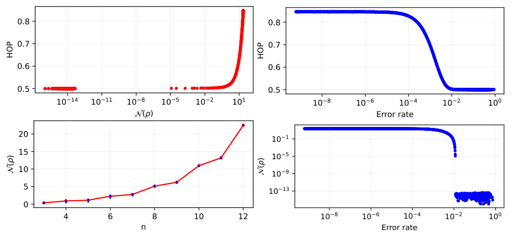
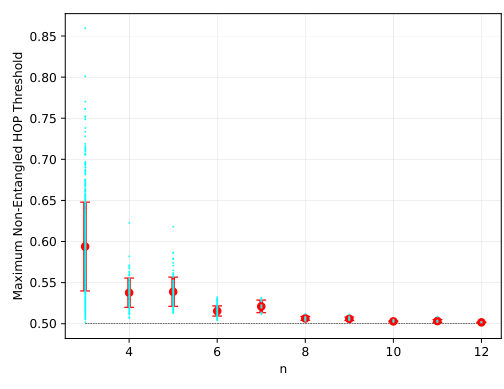
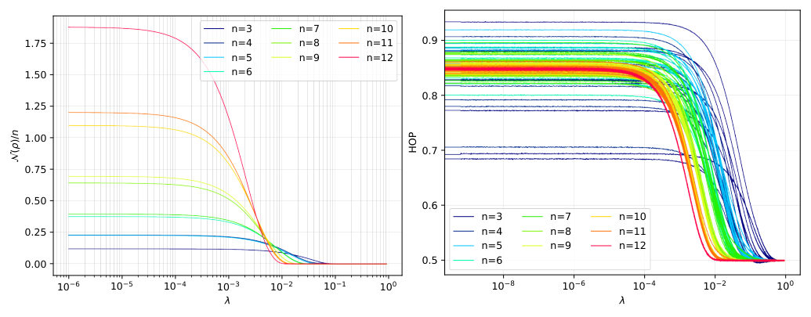
Summary. This paper investigates how noise affects the relationship between entanglement and benchmark performance in Quantum Volume circuits. By simulating depolarizing noise, the authors show that high benchmark scores can be achieved even if global quantum entanglement is lost. This highlights a potential flaw or limitation in using QV as an absolute measure of computational quality for noisy devices.
Why it may be interesting. It provides critical theoretical insight into the limitations of current quantum hardware benchmarks by quantifying when passing a test metric (like QV) no longer guarantees underlying physical coherence or entanglement.
Main problem. The study aims to numerically quantify the relationship between entanglement (measured by bipartite negativity) and performance metrics like Heavy Output Probability (HOP) in Quantum Volume circuits under depolarizing noise.
Main result. The research reveals that, for small systems, a quantum computer can potentially pass the QV benchmark threshold even when its underlying global entanglement has been destroyed by noise. Furthermore, it establishes a clear separation between numerical error accumulation and genuine physical entanglement loss.
Method. The authors simulate random Quantum Volume circuits using depolarizing error channels ($\lambda$) and calculate both the bipartite negativity of the resulting state and the HOP from the measured probability distribution.
Model / system. The model is based on the Quantum Volume (QV) protocol, which uses scrambling random circuits to benchmark NISQ devices. The noise applied is a depolarizing error channel acting on the quantum state.
Key observables. Heavy Output Probability (HOP), Bipartite Negativity ($N( ho)$), and the Depolarizing Error Rate ($\lambda$).
Important parameters / regimes. Circuit size ($n$), Depolarizing Error Rate ($\lambda$), and specific thresholds like HOP $\approx 0.5$ or $2/3$.
Assumptions / limitations. The noise is modeled solely by a depolarizing error channel, neglecting state preparation or measurement errors.
Figures summary. Figure 1 illustrates the trade-off between $\lambda$, negativity, and HOP for $n=12$. Figure 2 plots the maximum HOP achievable when entanglement negativity is zero. Figure 3 shows how both HOP and negativity decrease as the error rate $\lambda$ increases.
Paper structure. The paper numerically studies the interplay of noise ($\lambda$), entanglement ($N( ho)$), and benchmark performance (HOP) in QV circuits, culminating in identifying conditions where high HOP can occur without global entanglement.
The Quantum Volume protocol uses scrambling random circuits to benchmark NISQ computers. Quantum Volume is generally well-regarded as a benchmark for small, noisy, quantum computers because it requires the quantum computer to implement many non-local entangling gates within a square-shaped circuit, which incentivizes high qubit count, long qubit coherence times, and low error rates on all hardware gates. Quantum Volume circuits inherently produce high-entanglement states that are fragile to errors and decoherence. The Quantum Volume benchmark measures an observable called heavy-output-probability (HOP), where an HOP of $0.5$ corresponds to complete loss of coherence, and in the limit of system size an HOP $\approx 0.84$ for a fully coherent quantum processor. Here, we numerically study the tradeoff between depolarizing noise, entanglement as quantified by the bipartite negativity measure, and HOP in quantum volume circuits. Our results contextualize prior small scale quantum volume demonstrations on quantum computers and highlight that under depolarizing noise, due to finite system size effects heavy output probabilities can be greater than $0.5$ while the bipartite negativity entanglement has been destroyed. This implies, although improbable, that a NISQ computer could pass the Quantum Volume benchmark test threshold of $2/3$ while the underlying quantum computation has no global entanglement -- albeit only for small $n$.
Authors: Han-Qi Zheng, Peng-Zhang He, Lei-Hua Liu, Hai-Qing Zhang
Type: theory · Category: other · PDF: https://arxiv.org/pdf/2608.14325v1
Analysis basis: full PDF text, analyzed in chunks
Topic relevance: analog quantum simulation 1/5 · quantum measurements 1/5
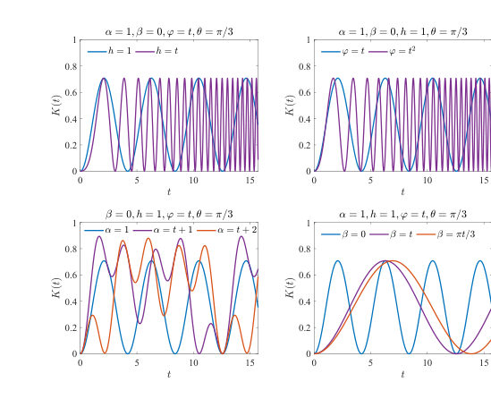
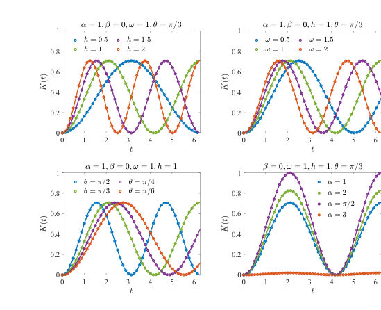
Summary. This theoretical paper connects Krylov complexity to the Berry phase by studying adiabatic evolution in a single spin system. The authors show that non-eigenstate initial conditions keep the complexity non-zero, and they derive an explicit formula proving this complexity oscillates at a frequency determined by both the external field strength and the geometric Berry phase.
Why it may be interesting. This work provides a concrete, quantifiable link between two advanced concepts—quantum complexity measures (Krylov) and geometric phases (Berry)—using a simple yet powerful model (qubits), which is highly relevant for understanding decoherence or entanglement dynamics in controlled quantum systems.
Main problem. The paper investigates the fundamental connection between Krylov complexity, a measure of quantum state evolution spread, and the Berry phase within the context of quantum adiabatic dynamics.
Main result. It demonstrates that while adiabatic evolution causes Krylov complexity to vanish if the initial basis is an eigenstate, it remains non-zero when the initial basis is a superposition state. Furthermore, for a single qubit, this complexity oscillates harmonically with a frequency directly related to the geometric Berry phase.
Method. The analysis involves constructing and analyzing the time evolution of Krylov subspaces using Lanczos tridiagonalization on a slowly evolving spin system Hamiltonian. A key step is transforming the basis to simplify the resulting differential equations.
Model / system. The primary model is a single spin system governed by a time-dependent Hamiltonian, $\hat{H}(t) = h(t)\hat{S} \cdot \mathbf{n}(t)$, analyzed specifically in the context of a two-level (single qubit) subspace.
Key observables. Krylov complexity $K(t)$ and the geometric Berry phase ($\gamma_B$).
Important parameters / regimes. External field strength ($h$), time evolution parameters defining $\mathbf{n}(t)$, and the frequency of oscillation $ u$.
Assumptions / limitations. The analysis is significantly simplified by assuming constant controlling parameters to derive a closed-form solution for $K(t)$. The initial state must be chosen as a superposition rather than an eigenstate.
Figures summary. Figure 1 shows numerical results of $K(t)$ exhibiting harmonic, dense, and quasi-periodic behavior based on time-dependent parameters. Figure 2 confirms the theoretical prediction for $K(t)$ showing clear harmonic oscillation matching the derived closed form.
Paper structure. The paper first establishes the problem by contrasting the zero complexity in eigenstate bases versus non-zero complexity in superposition bases. It then develops the mathematical framework using transformed Krylov operators and solves the resulting differential equation under constant parameter assumptions to derive a closed-form expression linking $K(t)$ directly to the Berry phase frequency.
The connection between Krylov complexity and Berry phase in adiabatic dynamics is investigated under the instantaneous eigenstate basis of a slowly evolving spin system. Adiabatic dynamics force the Krylov complexity to vanish if the initial Krylov basis is an instantaneous eigenstate of the Hamiltonian. Nevertheless, we demonstrate that the Krylov complexity will be nonvanishing if the initial Krylov basis is a superposition state rather than an eigenstate. Time evolution of Krylov complexity will behave periodically or quasi-periodically depending on the controlling parameters. In particular, for a single qubit system with constant parameters, the Krylov complexity will oscillate harmonically in time with the frequency relevant to the combination of the strength of the external field and the geometric Berry phase.
Authors: Julian May-Mann, Tixuan Tan, Patrick J. Ledwith, Zhengyan Darius Shi, Trithep Devakul
Type: theory · Category: strongly correlated electrons · PDF: https://arxiv.org/pdf/2608.14535v1
Analysis basis: full PDF text, analyzed in chunks
Topic relevance: Keldysh / 2PI / non-Gaussian methods 1/5 · analog quantum simulation 1/5
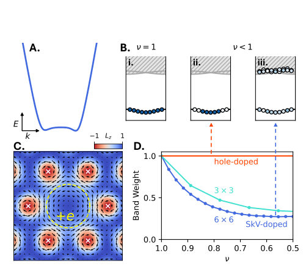
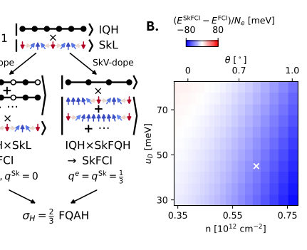
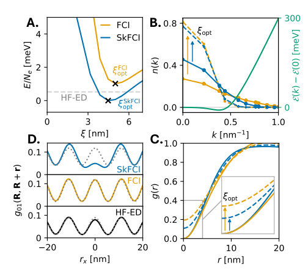
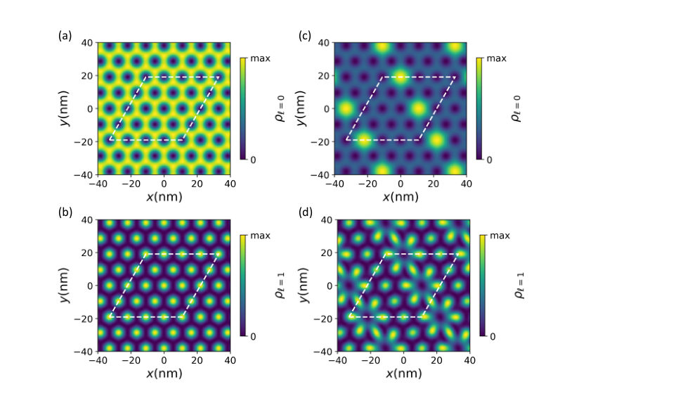
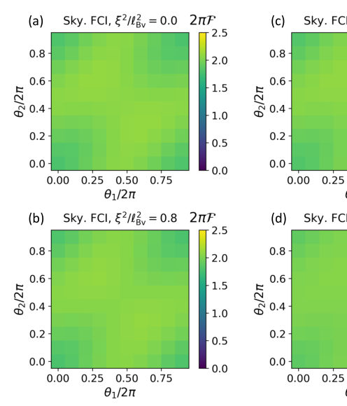
Summary. This paper introduces the Skyrmion Fractional Chern Insulator (SkFCI) as a novel, multiband route to understanding the FQAH effect in graphene. By modeling the system using skyrmion vacancies instead of simple hole doping, the authors demonstrate that this approach is energetically favorable and provides a robust theoretical framework for realizing fractionalization from collective texture fluctuations.
Why it may be interesting. This work provides a concrete theoretical mechanism for realizing exotic topological states (FQAH) in solid-state systems like graphene moiré heterostructures, moving beyond simplified single-band models common in the field.
Main problem. The paper proposes an unconventional, intrinsically multiband mechanism—the skyrmion fractional Chern insulator (SkFCI)—to explain the Fractional Quantum Anomalous Hall (FQAH) effect in rhombohedral graphene moiré superlattices.
Main result. The SkFCI state is shown to be energetically favored over conventional FCI states because it arises from the fractionalization of collective pseudospin textures, rather than relying on a partially filled single Chern band.
Method. The authors employ effective field theory, variational wavefunction construction, and Hartree-Fock/Exact Diagonalization calculations to compare different topological phases.
Model / system. The system is rhombohedral graphene moiré superlattices ($ ext{R5G/hBN}$) studied at filling factors $ u < 1$. The model treats the state as arising from skyrmion vacancies ($ ext{SkVs}$), which are intrinsically multiband objects.
Key observables. Fractional Hall conductivity ($\sigma_H = 2e^2/(3h)$), band weight (quantifying multi-band character), and energy expectation values ($E_{ ext{SkFCI}}$ vs $E_{ ext{FCI}}$).
Important parameters / regimes. Filling factor $ u=2/3$; the presence or absence of a periodic scalar potential ($H_{ ext{PE}}$); variational parameter $\xi$.
Assumptions / limitations. The analysis relies on developing an effective field theory for skyrmion vacancies and comparing projected Hamiltonians derived from Hartree-Fock calculations.
Figures summary. Figures illustrate the comparison between different physical scenarios ($ ext{SkL}$ vs. holes vs. $ ext{SkVs}$), quantify band mixing, and show energy spectra/spectral flow under flux threading for both FCI types.
Paper structure. The paper progresses from establishing the conceptual framework of $ ext{SkV}$s as multiband excitations to developing an effective field theory, performing variational calculations comparing SkFCI vs. FCI energies, and finally using advanced diagonalization techniques to confirm the multi-band nature of the proposed state.
We propose an unconventional microscopic origin for the fractional quantum anomalous Hall (FQAH) effect in rhombohedral graphene moiré superlattices: skyrmion fractionalization. We view the state at filling $ν<1$ as a metal of skyrmion vacancies, charge $+e$ objects formed by removing layer-pseudospin skyrmions from the interaction-generated skyrmion lattice Chern insulator at $ν=1$. These vacancies are intrinsically multiband degrees of freedom, absent in single Chern band-projected studies. Building on a recently proposed ideal limit, we first develop an effective field theory showing that skyrmion vacancies can themselves fractionalize, thereby inducing charge fractionalization. Focusing on $ν=\frac{2}{3}$, we then construct explicit variational trial wavefunctions for the resulting skyrmion fractional Chern insulator and provide numerical evidence, together with general arguments, showing that this process is energetically favored. Our results establish a realistic route to the FQAH that does not rely on a partially filled Chern band, but instead arises from fractionalization of collective pseudospin textures.
Authors: Phi-Hung Tran, Hao Quan Truong, R. Esteban Goetz, Anh-Thu Le
Type: theory · Category: other · PDF: https://arxiv.org/pdf/2608.13686v1
Analysis basis: full PDF text, analyzed in chunks
Topic relevance: Keldysh / 2PI / non-Gaussian methods 1/5 · methods for driven-dissipative 1/5
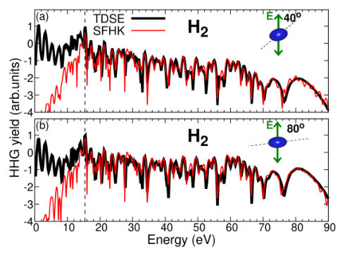
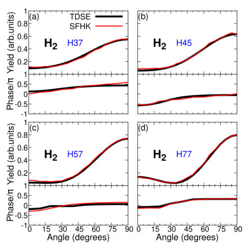
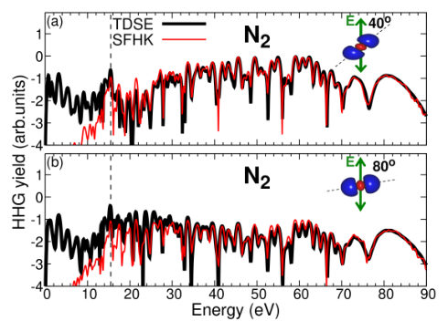
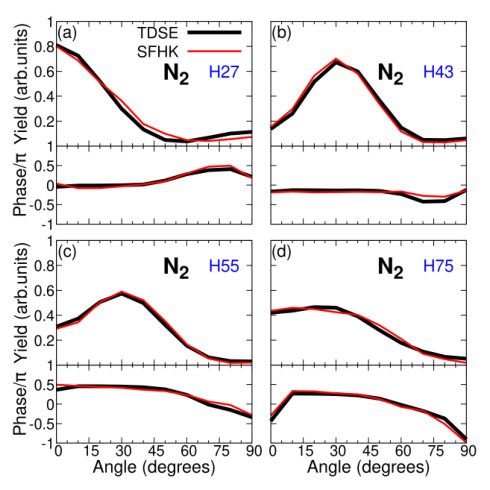
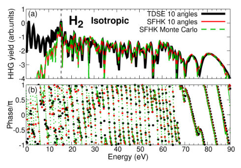
Summary. The paper introduces and validates an advanced semiclassical technique, the Strong-Field Herman-Kluk propagator method (SFHK), for calculating High-Order Harmonic Generation in molecules. By comparing its results against exact TDSE solutions, the authors demonstrate that SFHK is highly accurate while offering significant computational advantages, especially when averaging over molecular orientations.
Why it may be interesting. This work is highly relevant as it pushes semiclassical methods to model complex quantum phenomena (HHG) in molecular systems, providing a computationally efficient alternative to solving the full time-dependent Schrödinger equation for alignment averaging.
Main problem. The primary goal is calculating High-Order Harmonic Generation (HHG) from diatomic molecules when driven by intense, few-cycle laser fields.
Main result. The developed Strong-Field Herman-Kluk (SFHK) propagator method provides highly accurate results for both HHG yield and phase in molecules, matching exact Time-Dependent Schrödinger Equation (TDSE) solutions.
Method. The method combines the semiclassical strong-field approximation with the Herman-Kluk propagator to propagate electron wave packets, utilizing Monte Carlo sampling for molecular orientation averaging.
Model / system. The study focuses on diatomic molecules like H2 and N2. The calculation is performed within a Single-Active-Electron (SAE) approximation using specific basis sets (e.g., 6-311G, cc-pV5Z).
Key observables. HHG yield and phase, obtained via the Fourier transform of the dipole velocity or acceleration.
Important parameters / regimes. Laser parameters include $\lambda = 1200 ext{-nm}$ and peak intensities around $1.5 imes 10^{14} ext{ W/cm}^2$. The process operates in the tunneling regime (Keldysh parameter near 0.6).
Assumptions / limitations. Key assumptions include neglecting ground state depletion, Stark shifts, and assuming that bound-bound transitions are insignificant for HHG yield calculations.
Figures summary. Figures compare calculated HHG spectra from SFHK against TDSE results across various alignment angles ($ heta=0^\circ$ vs $ heta=90^\circ$), showing agreement but also highlighting discrepancies in specific energy ranges.
Paper structure. The paper develops the SFHK method, compares its results quantitatively to full TDSE simulations for molecular targets (H2, N2), discusses computational efficiencies like ensemble averaging, and proposes refinements ($ ext{SFHK}2$) to address known limitations in the ionization step approximation.
We extend our recently developed semiclassical strong-field Herman-Kluk (SFHK) propagator method to calculate high-order harmonic generation (HHG) in diatomic molecules driven by few-cycle intense laser fields. On the example of applications to H2 and N2, we show that our method, based on a combination of the Herman-Kluk propagator and the strong-field approximation, can provide very accurate results for both HHG yield and phase, nearly identical to those from the exact numerical solutions of the time-dependent Schrodinger equation. To compare with experimental measurements, averaging over molecular orientations must be performed. Here we demonstrate a distinct and powerful advantage of the SFHK, as its Monte Carlo sampling for the integration over the alignment distribution can be efficiently combined with the integration over the initial momentum distributions of electron wave-packet right after the tunnel exit. Therefore, the total number of trajectories used for the alignment-averaged HHG spectrum does not increase much compared to that for a single fixed alignment. Similar to atomic targets, the main computational task in the SFHK is to solve the classical Hamiltonian equations for the active electron in the combined electron-target ion potential and electron-laser interaction. The motion of the center of each electron wave packet in the continuum, represented by a coherent state, is governed by an independent classical trajectory so that the computation can be parallelized very efficiently.
Authors: Dongwook Kim, Ina Park, Bo Gyu Jang, Ji Hoon Shim
Type: theory · Category: strongly correlated electrons · PDF: https://arxiv.org/pdf/2608.14480v1
Analysis basis: full PDF text, analyzed in chunks
Topic relevance: Keldysh / 2PI / non-Gaussian methods 1/5 · analog quantum simulation 1/5
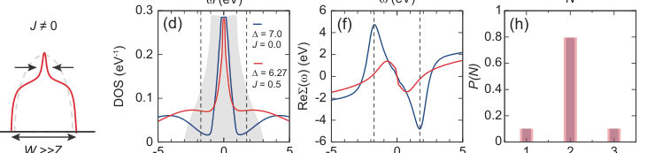
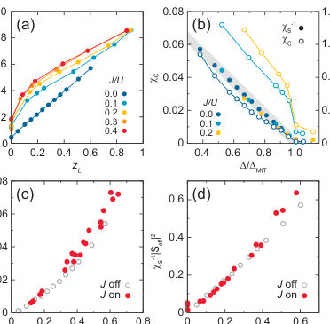
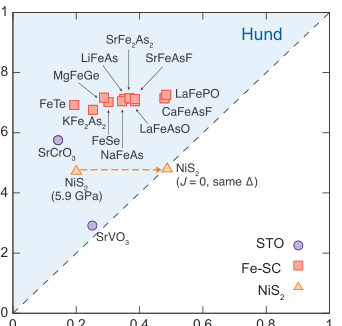
Summary. This work introduces a quantitative framework using two correlation factors, $z_L$ and $z_H$, to measure the signature of Hund's coupling in correlated electron systems. The deviation between these two factors quantifies 'low-energy effectiveness,' showing that this effect is fundamentally linked to spin fluctuations rather than just charge interactions. This provides a universal diagnostic tool for understanding materials exhibiting complex electronic correlations.
Why it may be interesting. The concept of quantifying correlation effects via distinct low-energy ($z_L$) and high-energy ($z_H$) renormalization scales provides a powerful, quantitative diagnostic tool for understanding complex many-body physics beyond simple Mott or BCS descriptions.
Main problem. To develop a quantitative framework to characterize Hundness and the associated 'low-energy effectiveness (LEE)' of correlation effects, which causes deviations from the standard Brinkman–Rice picture in multi-orbital systems.
Main result. The discrepancy between two newly defined correlation factors, $z_L$ (low-energy) and $z_H$ (high-energy), provides a universal measure of Hundness; deviation ($z_H eq z_L$) signifies LEE, which is microscopically linked to the spin-degree-of-freedom effectiveness.
Method. Theoretical analysis using Dynamical Mean-Field Theory (DMFT) applied to multi-orbital Hubbard models, supplemented by quantum Monte Carlo calculations for benchmarking.
Model / system. The study focuses on the multiorbital Hubbard model, analyzing both half-filled two-orbital and $1/3$-filled three-orbital systems. Calculations are validated against real materials like Fe-SC and Sr(TM)O$_3$.
Key observables. $z_L$ (low-energy renormalization factor), $z_H$ (high-energy charge fluctuation factor), spin and charge susceptibilities ($\chi_S, \chi_C$), and the ratio $z_H/z_L$.
Important parameters / regimes. Hund's coupling ($J$) relative to Coulomb repulsion ($U$), filling fraction (e.g., 1/3-filled), and characteristic energy scales.
Assumptions / limitations. The framework is proposed as a universal measure of Hundness beyond the limitations of the Brinkman-Rice picture, though its strict validity is noted only in the metallic phase.
Figures summary. Figures compare DOS and self-energies for Hundless vs. Hund-correlated systems (illustrating LEE), and plot $z_H$ vs. $z_L$ to show deviation increasing with finite $J/U$.
Paper structure. The paper establishes the physical problem by contrasting Hubbard U effects with Hund J effects, introduces the quantitative framework using $z_L$ and $z_H$, derives the connection between these factors and susceptibilities ($\chi_C \leftrightarrow z_H$), and validates this universal measure across various multiorbital models and real materials.
Hund's coupling $J$ induces fundamentally different correlation effects from Hubbard $U$. This leads to a violation of the Brinkman--Rice scenario and the emergence of a Janus-faced phase owing to its low-energy effectiveness, in which band renormalization is confined below a characteristic energy scale. We propose a quantitative framework to capture low-energy effectiveness through two correlation factors: $z_L$ for low-energy quasiparticle renormalization and $z_H$ for high-energy charge fluctuations, newly introduced in this study. The discrepancy between $z_L$ and $z_H$ reflects the Hund character of the correlation. By establishing a one-to-one correspondence between correlation factors and the spin and charge susceptibilities, we identify the spin-degree-of-freedom effectiveness as the microscopic origin of low-energy effectiveness. Our framework, validated across multiorbital models and real materials, provides a universal and quantitative measure of Hundness.
Authors: Giuseppe Carleo, Riccardo Rossi
Type: theory · Category: strongly correlated electrons · PDF: https://arxiv.org/pdf/2608.14476v1
Analysis basis: full PDF text, analyzed in chunks
Topic relevance: Keldysh / 2PI / non-Gaussian methods 1/5
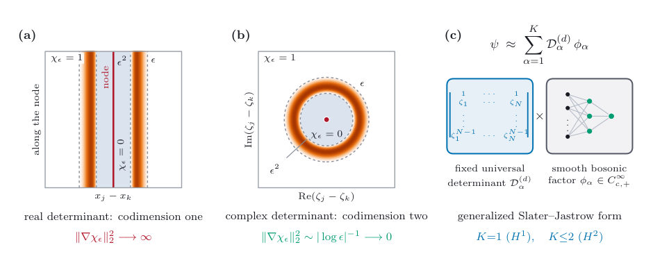
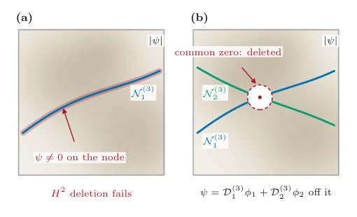
Summary. The paper rigorously proves that approximating continuum fermionic wave functions in Sobolev spaces requires only a small, fixed number of universal Slater determinants. This result establishes a fundamental theoretical limit on the expressiveness needed by advanced quantum state ansatzes like generalized Slater-Jastrow forms.
Why it may be interesting. This work provides rigorous mathematical bounds on the complexity required by modern variational quantum methods (like NQS) to accurately capture fermionic correlations, which is crucial for simulating strongly correlated materials.
Main problem. To determine the minimum number of universal Slater determinants required for a variational description of interacting continuum fermions in Sobolev norms.
Main result. The authors prove that at most two fixed, universal Slater determinants are needed to approximate any fermionic wave function variationally complete up to the second-order Sobolev norm in three dimensions.
Method. The proof uses advanced functional analysis techniques involving logarithmic cutoffs and analyzing the codimension of nodal surfaces associated with determinants within Sobolev spaces ($H^1$ and $H^2$).
Model / system. The system models interacting fermions (like electrons) in continuous space, governed by a Hamiltonian including a two-body Coulomb interaction. The wave function is approximated using generalized Slater-Jastrow forms.
Key observables. Variational energy controlled by the first-order Sobolev norm ($H^1$), and local energy variance controlled by the second-order Sobolev norm ($H^2$).
Important parameters / regimes. The dimensionality of space ($d \le 3$) and the particle number ($N$); results are independent of $N$ and target accuracy $\epsilon$.
Assumptions / limitations. The analysis assumes spinless fermions (though extension to spinful is noted as straightforward) and relies on advanced theorems regarding function spaces and nodal geometry.
Figures summary. Figure 1 illustrates the representation using a single universal determinant multiplied by bosonic factors. Figure 2 details how two fixed determinants suffice in $H^2$ for $d=3$ by analyzing intersections of nodal surfaces.
Paper structure. The paper builds from establishing density results in Sobolev spaces, proving exact factorization in $d=1$, and then constructing the necessary smooth bosonic factors ($\Phi$) using Hadamard factorization to show that a sum involving at most two universal determinants is variationally complete for $H^s$ norms.
How many Slater determinants does an accurate variational description of interacting fermions require? Exact expansions in a finite basis need combinatorially many, and state-of-the-art fermionic neural quantum states stack growing numbers of them. We prove that, in the norms that govern variational calculations, at most two are needed, independently of the number of particles and of the target accuracy. A single universal Slater determinant-specified in advance, independent of both the system and the state-multiplied by a smooth bosonic wave function approximates any fermionic wave function in up to three spatial dimensions in the first-order Sobolev norm, which controls the variational energy. Reaching the second-order Sobolev norm-for Coulomb interactions, the domain of the Hamiltonian, which bounds the variance of the local energy at the core of variational Monte Carlo-requires at most one additional fixed determinant, and only in three dimensions. Antisymmetry therefore costs at most two universal determinants and no expressiveness: generalized Slater-Jastrow neural quantum states are variationally complete.
Authors: Alexandru Cojocaru, Laura Lewis
Type: theory · Category: quantum information and computing · PDF: https://arxiv.org/pdf/2608.14331v1
Analysis basis: full PDF text, analyzed in chunks
Topic relevance: quantum measurements 1/5
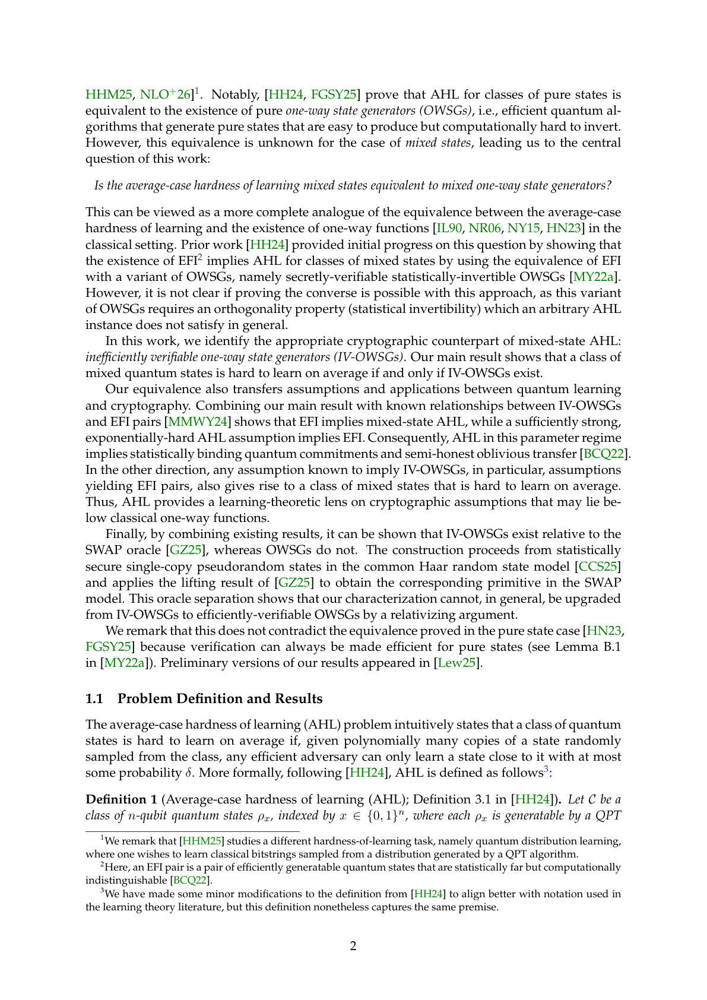
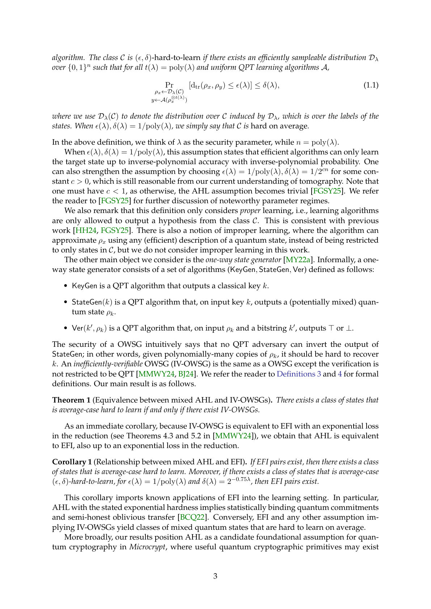
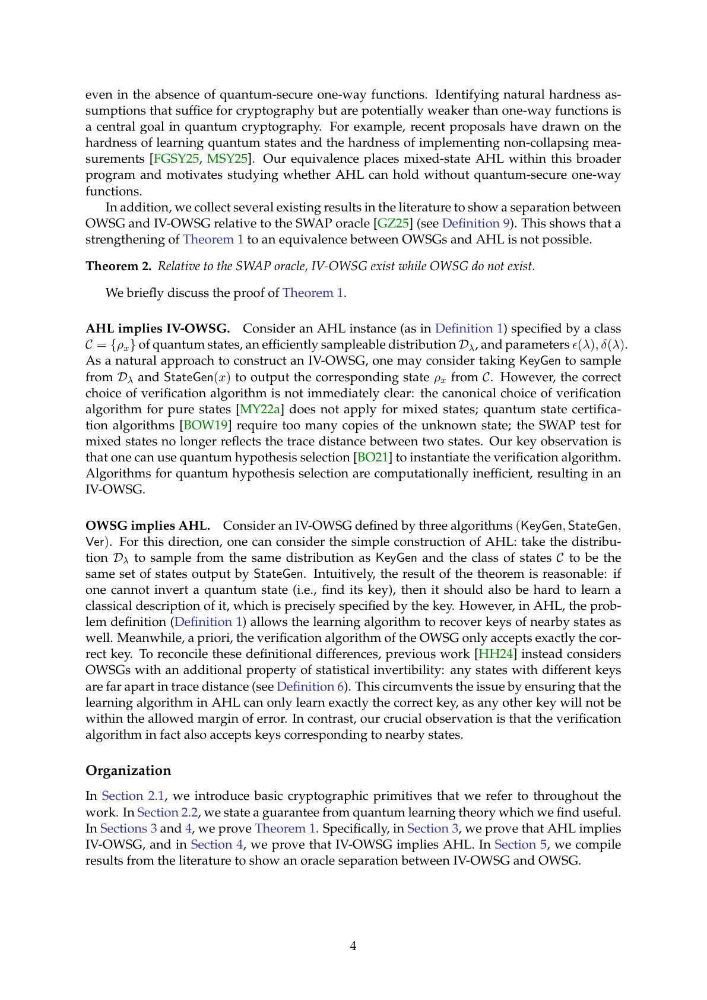
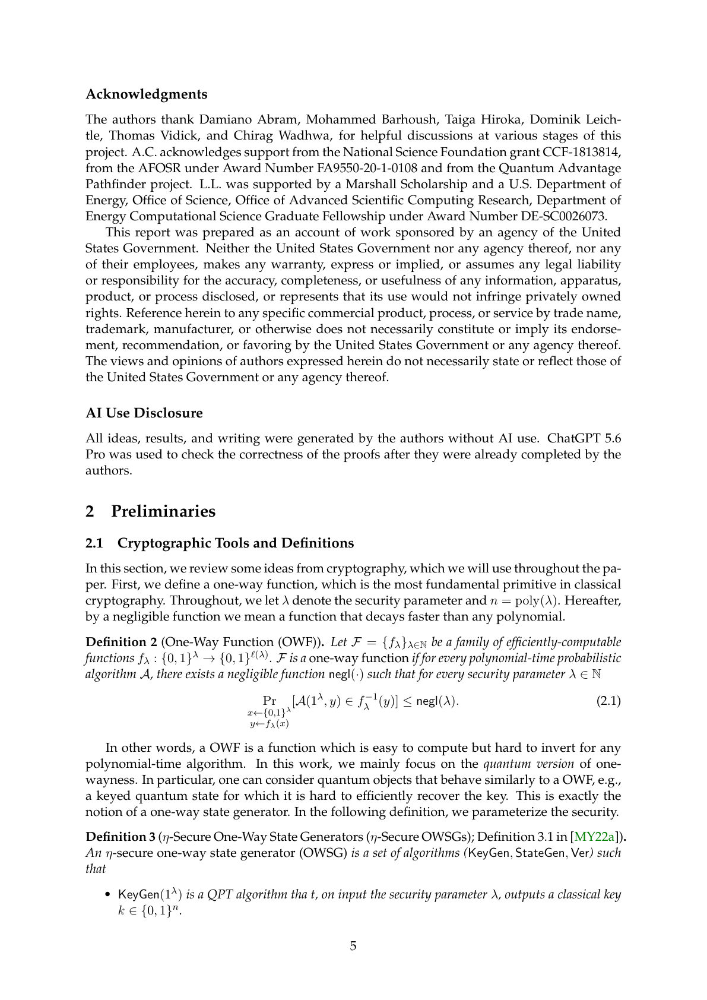
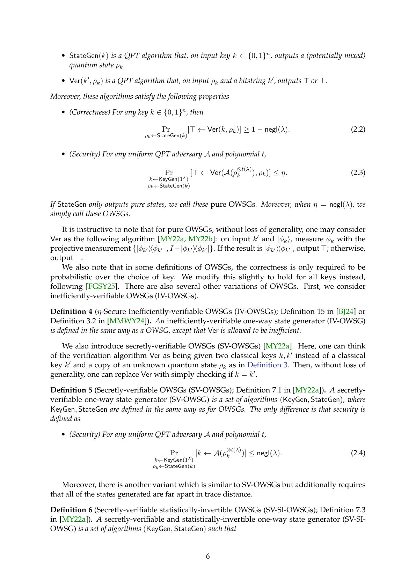
Summary. This paper proves a deep equivalence showing that the difficulty of learning mixed quantum states on average (AHL) is mathematically equivalent to the existence of specific cryptographic primitives called Inefficiently Verifiable One-Way State Generators (IV-OWSGs). It also establishes a crucial separation result, demonstrating that this weaker assumption (IV-OWSG) does not imply the stronger standard OWSG, thereby refining our understanding of quantum computational hardness.
Why it may be interesting. This work connects fundamental concepts in quantum computation (state distinguishability) directly to the foundations of quantum cryptography, providing new tools for assessing the computational hardness inherent in quantum information processing.
Main problem. The paper establishes a fundamental equivalence between the average-case hardness of learning (AHL) for mixed quantum states and the existence of inefficiently verifiable one-way state generators (IV-OWSGs). It also explores the separation between IV-OWSGs and standard OWSGs.
Main result. The core result is that mixed-state AHL is equivalent to the existence of IV-OWSGs, providing a quantum information-theoretic characterization for this hardness assumption. Furthermore, it proves an oracle separation showing that IV-OWSGs can exist without corresponding standard OWSGs.
Method. The authors use proof techniques involving cryptographic reductions and quantum hypothesis selection algorithms to construct the necessary implications ($ ext{AHL} \iff ext{IV-OWSG}$).
Model / system. The analysis is conducted in the abstract setting of quantum information theory, dealing with mixed quantum states ($ ho_x$) on $n$-qubits and cryptographic primitives like One-Way State Generators (OWSGs) and their inefficiently verifiable counterparts (IV-OWSGs).
Key observables. Trace distance ($d_{ ext{tr}}$), security parameters ($\lambda$), and the existence/non-existence of specific quantum generators.
Important parameters / regimes. Security parameter $\lambda$, number of qubits $n = ext{poly}(\lambda)$, accuracy $\epsilon(\lambda)$, and failure probability $\delta(\lambda)$.
Assumptions / limitations. The equivalence holds for mixed states, which is a generalization beyond previously studied pure state cases. The separation results are established relative to the SWAP oracle.
Paper structure. The paper proceeds by defining AHL and IV-OWSGs, then proving the $ ext{AHL} \implies ext{IV-OWSG}$ direction using quantum hypothesis selection. It subsequently proves the reverse implication ($ ext{IV-OWSG} \implies ext{AHL}$) via a contradiction argument involving learning adversaries breaking OWSG security. Finally, it establishes an oracle separation between IV-OWSGs and OWSGs.
The relationship between cryptography and learning theory has long been a central theme in the foundations of theoretical computer science: cryptographic primitives can imply hardness of learning, while hardness of learning can in turn be used to construct cryptographic schemes. Recent works have begun exploring analogous connections in the quantum setting, relating the average-case hardness of learning quantum states (AHL) to cryptographic primitives such as one-way state generators (OWSG). Despite recent progress exploring this for pure states, the relationship for mixed states has remained an open question. In this work, we prove that the existence of AHL for mixed quantum states is equivalent to the existence of inefficiently verifiable one-way state generators (IV-OWSGs). As a consequence, this relates mixed-state AHL to EFI pairs. Moreover, as a corollary of existing results, we obtain a separation between IV-OWSGs and OWSGs relative to the SWAP oracle.
Authors: Chun-Hua Lin, Samuel Yen-Chi Chen, Yu-Chao Hsu, Kuo-Chung Peng, Jiun-Cheng Jiang, Chi-Sheng Chen, Tai-Yue Li, Nan-Yow Chen, En-Jui Kuo, Hsi-Sheng Goan
Type: experiment · Category: other · PDF: https://arxiv.org/pdf/2608.13914v1
Analysis basis: full PDF text, analyzed in chunks
Topic relevance: quantum measurements 1/5
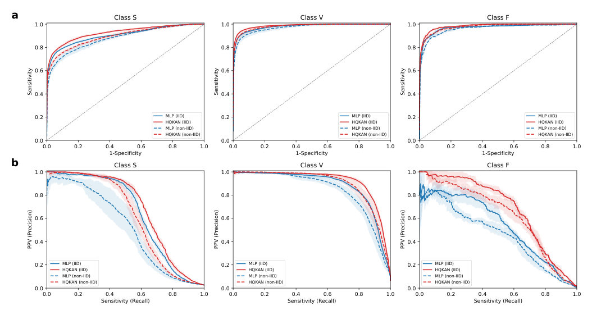
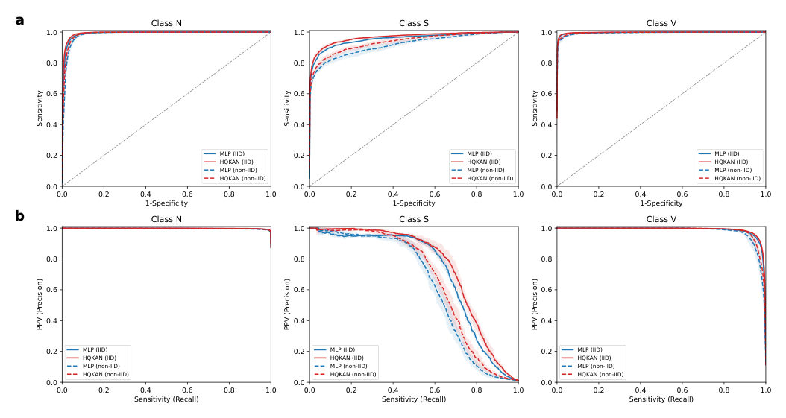
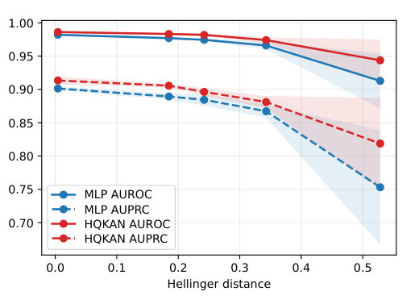
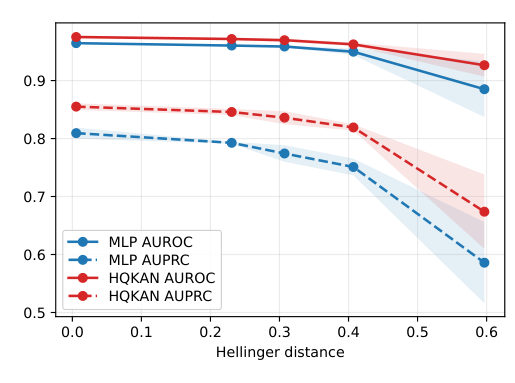
Summary. This paper introduces a Hybrid Quantum-inspired Kolmogorov-Arnold Network (HQKAN) as an advanced solution for federated learning on sensitive ECG biosignals. It addresses key challenges like data privacy and non-IID distribution shifts inherent in multi-site medical data sharing. HQKAN proves to be superior to standard MLPs by maintaining high accuracy while drastically reducing model size and communication overhead.
Why it may be interesting. While the application is in AI/ML, the use of 'quantum-inspired' networks (HQKAN) for complex pattern recognition tasks like biosignal analysis connects advanced computational models to physical data streams, which can be relevant for quantum machine learning applications in diagnostics.
Main problem. The core problem is developing a communication-efficient and robust classifier for privacy-aware federated learning on sensitive biosignal data like ECG recordings.
Main result. The proposed Hybrid Quantum-inspired Kolmogorov-Arnold Network (HQKAN) significantly outperforms the MLP baseline across multiple metrics, while also achieving substantial reductions in trainable parameters and communication costs.
Method. The authors implemented HQKAN within a Federated Averaging (FedAvg) framework to classify arrhythmias on ECG datasets under varying degrees of data heterogeneity (non-IID settings).
Model / system. The system involves training deep learning models (HQKAN vs. MLP) on Electrocardiogram (ECG) recordings from the MIT-BIH and INCART datasets, simulating a decentralized hospital/wearable device network.
Key observables. Macro-F1 score, Cohen’s $\kappa$, Brier score, AUROC, AUPRC, trainable parameters count, and communication cost reduction percentage.
Important parameters / regimes. Number of clients ($K \in \{8, 16, 32\}$), local epochs ($E=5$), Dirichlet concentration ($\alpha$) controlling label skew (Hellinger distance).
Assumptions / limitations. The evaluation assumes that retaining the global checkpoint maximizing validation AUPRC is optimal for performance.
Figures summary. Figures compare model performance (ROC/PR curves) and robustness (AUROC/AUPRC vs. Hellinger distance) between HQKAN and MLP under increasing data heterogeneity levels.
Paper structure. The paper structure involves setting up the federated learning challenge on biosignals, proposing the HQKAN architecture as an improvement over MLPs, rigorously testing its performance against varying client numbers and non-IID label distributions, and quantifying efficiency gains.
Electrocardiogram (ECG) recordings are sensitive biomedical data, limiting the ability of hospitals and wearable devices to share raw signals for centralized model training. Federated learning addresses this practical privacy constraint by enabling collaborative model training while keeping raw biosignal data at their respective sources. However, federated ECG classification remains challenging due to limited client-side samples, imbalanced arrhythmia labels, and non-independent and identically distributed (non-IID) data across clients. These constraints require classifiers that are both communication-efficient and robust to cross-client distribution shifts. In this work, we evaluate a hybrid quantum-inspired Kolmogorov-Arnold network (HQKAN) against a multilayer perceptron (MLP) for five-class arrhythmia classification on the MIT-BIH dataset and three-class classification on the INCART dataset under federated averaging (FedAvg). Across multiple client configurations, HQKAN improves most aggregate and minority-class metrics while using 37.35% fewer trainable parameters and reducing communication cost by 24.89% on MIT-BIH; on INCART, it achieves corresponding reductions of 44.81% and 36.41%. These results indicate that HQKAN offers a compact, communication-efficient and robust alternative to the MLP baseline for privacy-aware federated learning on biosignal data.
Authors: Ko Shiraiwa, Shingo Kukita
Type: theory · Category: quantum information and computing · PDF: https://arxiv.org/pdf/2608.13997v1
Analysis basis: full PDF text, analyzed in chunks
Topic relevance: quantum measurements 1/5
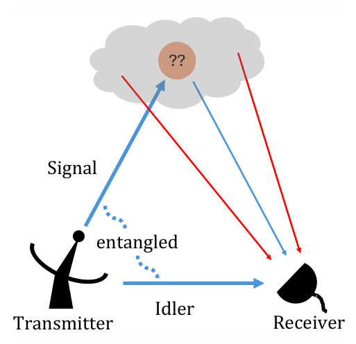
Summary. This paper analyzes the performance limits of quantum illumination when the phase shift imparted by a target is unknown. By restricting receivers to independent and identical measurements, the authors prove that entanglement offers no leading-order advantage over classical coherent light detection in this worst-case scenario. This result constrains the practical realization of quantum sensing advantages.
Why it may be interesting. This work provides crucial theoretical limitations on quantum sensing protocols, particularly highlighting that practical constraints (like unknown phases) can negate predicted quantum advantages derived from idealized models.
Main problem. The study investigates whether quantum illumination (QI) retains its theoretical advantage when the unknown return phase from a target is considered, specifically for receivers limited to independent and identical measurements (IIM).
Main result. The analysis shows that when the return phase is unknown, the worst-case error exponent for IIMs cannot exceed that achieved by unentangled coherent light using heterodyne detection. Consequently, entanglement provides no leading-order quantum advantage in this specific scenario.
Method. The authors bounded the worst-case error exponent ($\Xi_C$) for distinguishing target presence ($H_1$) from absence ($H_0$) under unknown phase $ heta$, comparing it to known bounds derived using Chernoff information techniques.
Model / system. The system models quantum illumination using entanglement between a signal and an idler, where the reflected light introduces an unknown return phase ($ heta$). The detection process is treated as a composite hypothesis test restricted to IIMs.
Key observables. Error exponent ($\Xi_C$), which quantifies the decay rate of the error probability in distinguishing hypotheses.
Important parameters / regimes. Reflectivity ($\kappa$) of the target beam splitter, unknown return phase ($ heta$), and background noise photon number ($N_B$).
Assumptions / limitations. The analysis assumes the return phase $ heta$ is an unknown constant common to all trials, and that the receiver employs Independent and Identical Measurements (IIMs).
Paper structure. The paper establishes the problem by noting the dependence of QI advantage on a known phase. It then derives an upper bound for the error exponent under unknown $ heta$ using IIM constraints, culminating in a comparison showing saturation by classical, unentangled detection schemes.
Quantum illumination exploits entanglement between a transmitted signal and a retained idler to improve the error-probability exponent of target detection by roughly a factor of four (6 dB) over that with a coherent state of the same transmitted energy. This advantage presumes a known return phase. In practice, the phase is set by the range to the target and the condition of its surface, and is difficult to know in advance. Whether the advantage survives when this phase is unknown is not obvious. Here, we cast target detection as a composite hypothesis test in which the return phase is an unknown constant common to all trials, and we restrict the receiver to independent and identical measurements on each copy. We bound the worst-case error exponent at low reflectivity for every such measurement and every input state of a single signal mode and an idler of any dimension. We then show that unentangled coherent light with heterodyne detection already saturates this bound, for every value of the phase. Entanglement therefore confers no advantage in this setting. The class of independent and identical measurements contains many implementable quantum-illumination receivers, including the optical parametric amplifier and phase-conjugate receivers. Our result shows that none of them can offer a quantum advantage in the worst case over the phase, to leading order in the reflectivity.
Authors: Zhongze Guo, Bei Xu, Qiang Gu
Type: theory · Category: other · PDF: https://arxiv.org/pdf/2608.14041v1
Analysis basis: full PDF text, analyzed in chunks
Topic relevance: quantum measurements 1/5
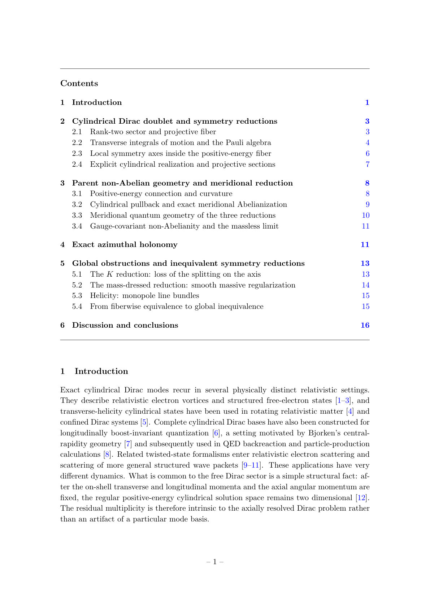
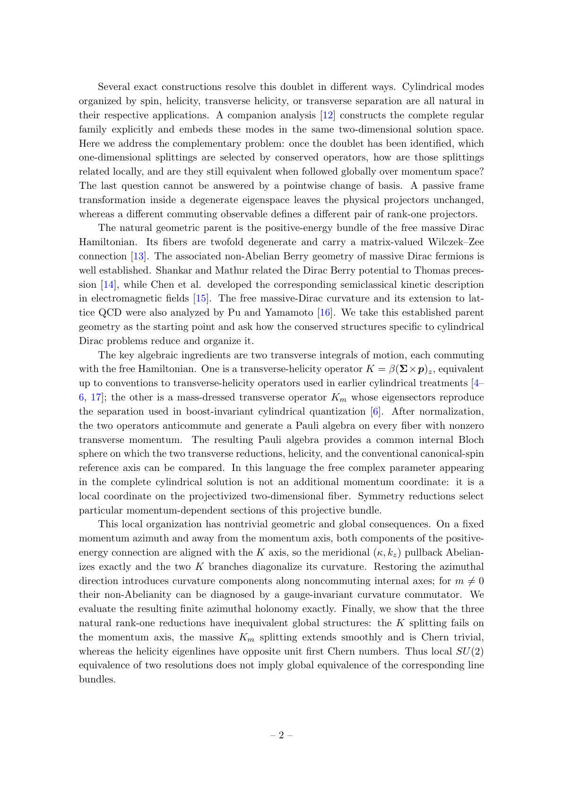
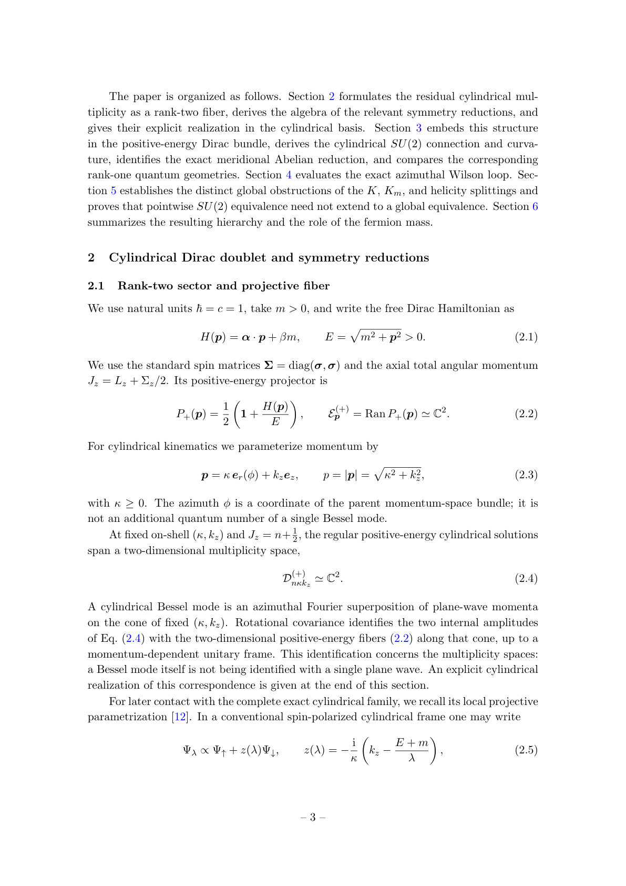
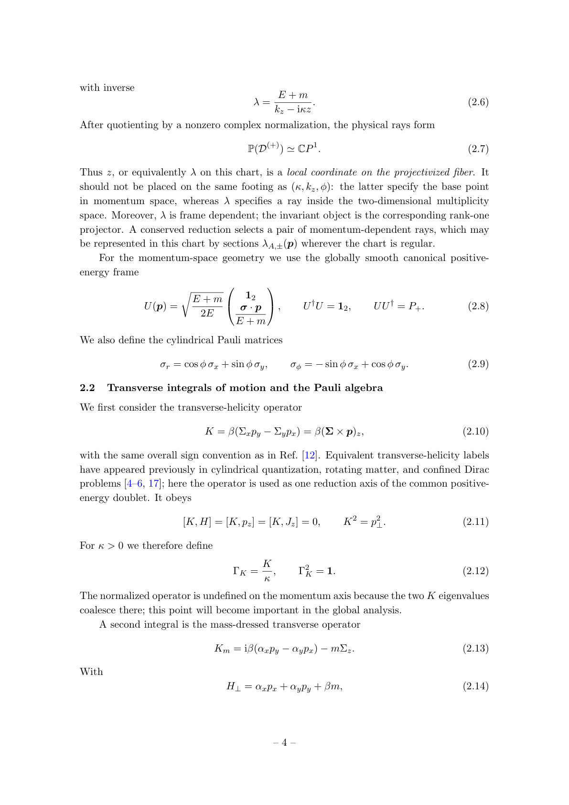
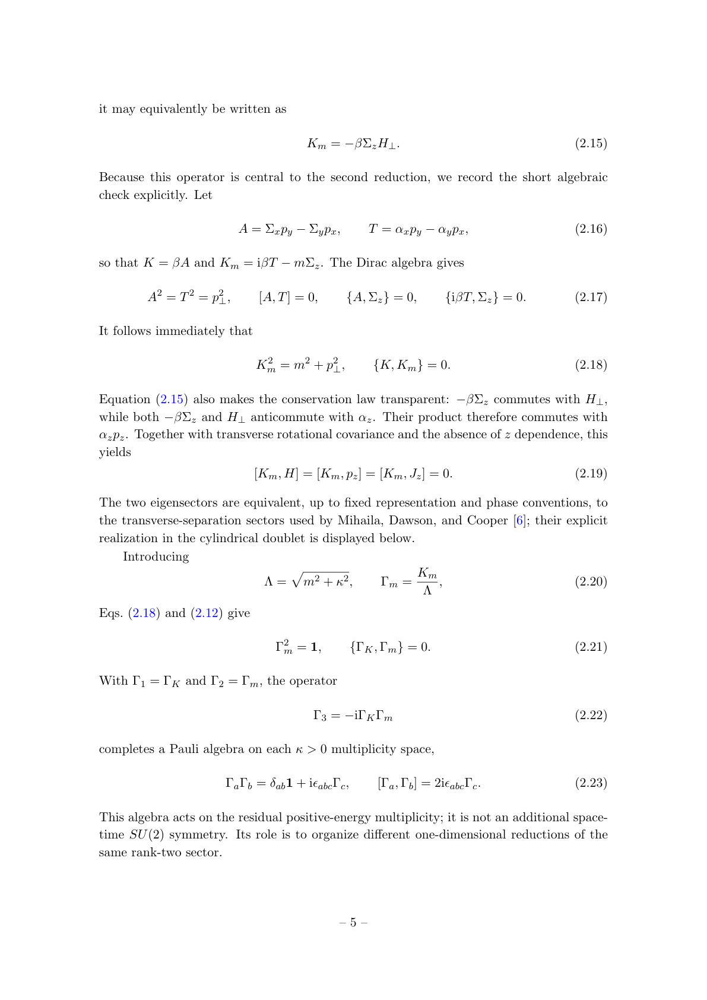
Summary. This paper analyzes the Dirac equation for a fermion exhibiting cylindrical symmetry, focusing on three distinct ways to simplify or 'reduce' the system using conserved symmetries. Although these reductions are mathematically equivalent in any small region (locally), the authors prove they possess fundamentally different global topological structures, as evidenced by their differing Chern numbers. This highlights that local physics descriptions can mask profound global differences in quantum field theories.
Why it may be interesting. This work provides a rigorous example in condensed matter theory showing that local symmetry preservation (local basis equivalence) is insufficient to guarantee global physical equivalence when dealing with topologically non-trivial quantum systems.
Main problem. The study investigates whether different symmetry reductions of a cylindrical Dirac doublet, which are locally equivalent, maintain global equivalence when analyzed over momentum space.
Main result. The three distinct symmetry reductions (transverse-helicity, mass-dressed integral, and helicity) are found to be globally inequivalent despite being locally related by a Pauli algebra structure.
Method. The authors analyze the geometry using concepts from differential geometry, specifically comparing line bundle topologies via Chern numbers derived from calculating Berry curvatures and azimuthal Wilson loops for each reduction.
Model / system. The system is modeled by the free massive Dirac Hamiltonian describing a fermion in a background leading to cylindrical solutions. The analysis treats the positive-energy solution space as a rank-two bundle over momentum space.
Key observables. Transverse helicity, mass-dressed transverse integral, and standard helicity operators; Chern numbers characterizing the global topology of the associated line bundles; azimuthal Wilson-loop spectrum.
Important parameters / regimes. Mass ($m>0$), transverse momentum ($\kappa$), and longitudinal momentum ($k_z$).
Assumptions / limitations. The analysis assumes $m > 0$ and focuses on comparing physical projectors derived from the symmetry reductions rather than just local algebraic structures.
Paper structure. The paper establishes the existence of three conserved operators defining local symmetries, calculates their associated Berry curvatures on a meridional slice, and then proceeds to calculate the global azimuthal holonomy (Wilson loop) spectrum and Chern numbers for each reduction to prove topological inequivalence.
Different exact cylindrical Dirac constructions are locally related within the same two-dimensional positive-energy sector, suggesting that they might be merely alternative choices of basis. We show that this equivalence can fail globally. Treating the cylindrical Dirac doublet as a rank-two bundle over momentum space, we identify transverse helicity, a mass-dressed transverse integral, and helicity as distinct symmetry-selected rank-one reductions, whose normalized restrictions organize the internal doublet through a Pauli algebra. The positive-energy Dirac $SU(2)$ connection Abelianizes exactly on fixed-azimuth meridians in the transverse-helicity basis, while its full three-dimensional curvature remains genuinely non-Abelian for nonzero mass. We derive the corresponding azimuthal Wilson-loop spectrum in closed form. The three reductions then display sharply different global structures: the transverse-helicity splitting terminates on the momentum axis, the mass-dressed splitting extends smoothly and is Chern trivial for $m>0$, whereas helicity defines line bundles with opposite unit Chern numbers. Thus a single Dirac doublet admits symmetry resolutions that are locally equivalent but globally inequivalent.
Authors: Tadashi Yoneda, Shinichi Nishihaya, Markus Kriener, Haruto Kaminakamura, Ming-Chun Jiang, Naohiro Tezuka, Yoshiya Murakami, Ryotaro Arita, Hiroaki Ishizuka, Masaki Uchida
Type: experiment · Category: other · PDF: https://arxiv.org/pdf/2608.14060v1
Analysis basis: full PDF text, analyzed in chunks
Topic relevance: Keldysh / 2PI / non-Gaussian methods 1/5
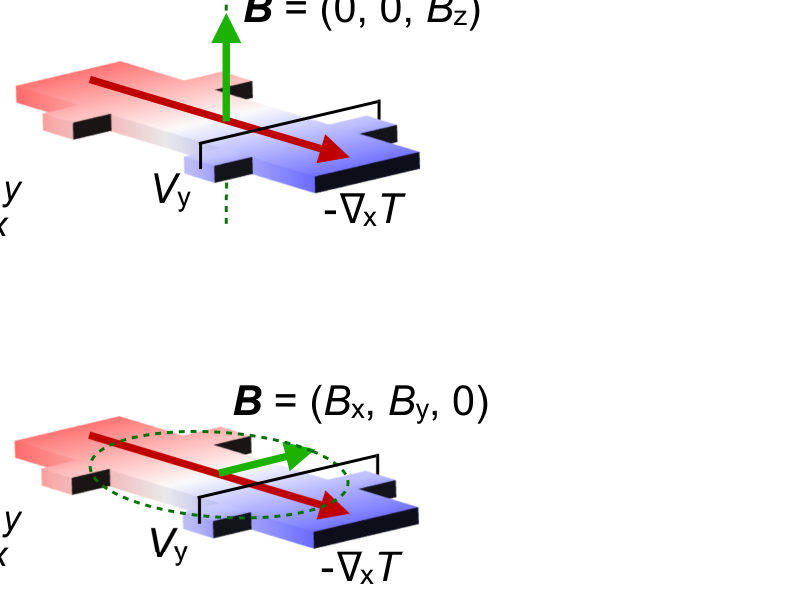
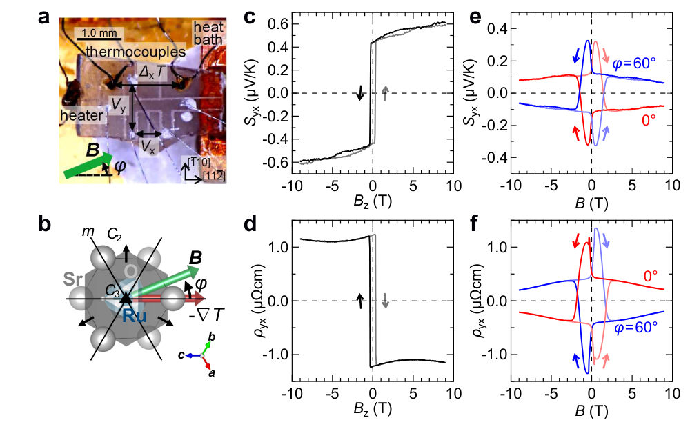
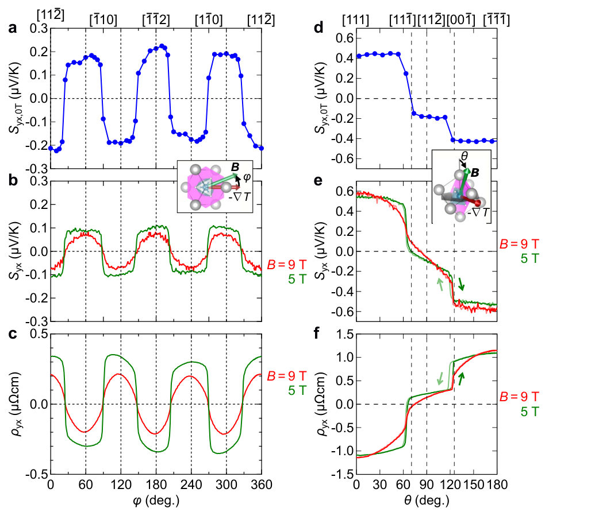
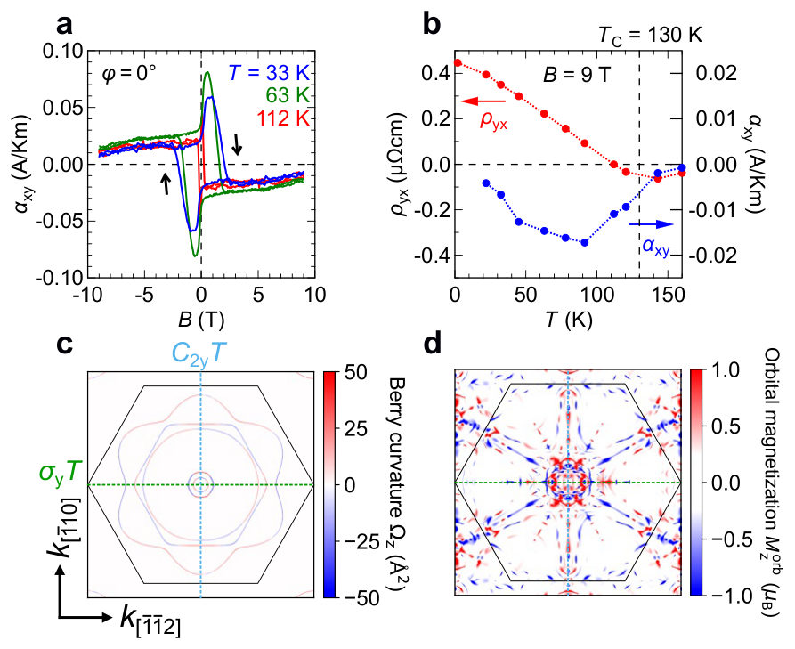
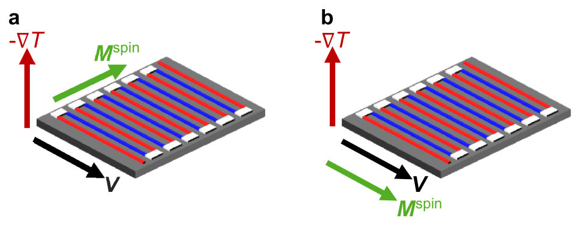
Summary. The research reports the observation of an anomalous Nernst effect using ultrathin ferromagnetic oxide films where the applied magnetic field is parallel to the temperature gradient. This finding overcomes a long-standing orthogonality constraint in magnetothermoelectric physics by showing that intrinsic coupling between in-plane spin magnetization and out-of-plane orbital magnetization can generate a robust transverse voltage signal.
Why it may be interesting. This work provides a concrete demonstration of how fundamental symmetries can be circumvented in condensed matter transport phenomena by exploiting specific material anisotropies (like trigonal distortion), which has implications for designing novel thermoelectric materials.
Main problem. The study addresses the anomalous Nernst effect (ANE) under conditions where the applied magnetic field is in-plane, challenging the conventional orthogonality constraint that limits ANE measurements.
Main result. The authors report observing a pronounced ANE signal arising from intrinsic coupling to spontaneous in-plane spin magnetization, demonstrating that the effect is no longer limited by the strict orthogonality condition.
Method. Magnetothermoelectric measurements were performed using systematic spherical rotations of the magnetic field on ultrathin films, coupled with data analysis techniques like antisymmetrization and subtraction of extrinsic components.
Model / system. The experiment uses prototypical ferromagnetic oxide thin films, specifically (111) SrRuO3 grown on (111) SrTiO3, which exhibits trigonal symmetry and strong spin-orbit coupling effects.
Key observables. Nernst signal ($S_{yx}$), Hall resistivity ($ ho_{yx}$), transverse thermoelectric conductivity ($\alpha_{xy}$), and the dependence of these signals on magnetic field angle ($\phi$) and temperature (T).
Important parameters / regimes. In-plane vs. out-of-plane magnetic fields, azimuthal angles ($\phi = 0^\circ, 60^\circ$), and temperatures ranging from cryogenic to above room temperature.
Assumptions / limitations. The analysis assumes that the observed in-plane ANE is intrinsic, driven by orbital magnetization ($M_{ ext{orb}}$) coupled to in-plane spin magnetization ($M_{ ext{spin}}$), thereby bypassing the conventional geometric constraints.
Figures summary. Figures illustrate schematic comparisons of out-of-plane vs. in-plane ANE; experimental results show angle and field dependence of $S_{yx}$ and $ ho_{yx}$; temperature sweeps map $\alpha_{xy}$ behavior; and calculations confirm the link between $M_{ ext{spin}}$ and $M_{ ext{orb}}$.
Paper structure. The paper progresses from establishing the physical problem (orthogonality constraint) to presenting experimental measurements across various field orientations, confirming three-fold symmetry in the response, and finally linking these findings theoretically via orbital magnetization derived from DFT calculations.
The Nernst effect, which enables the conversion of a heat current into a transverse voltage under magnetic field or spin magnetization, holds significant promise for energy harvesting and thermal management in future electronics. However, the conventional Nernst effect is fundamentally constrained by the orthogonality requirement that the applied field or spontaneous magnetization must be perpendicular to the plane defined by the temperature gradient and the induced voltage. Here we report that symmetry-tailored ultrathin films of a prototypical ferromagnetic oxide exhibit anomalous Nernst effect arising from intrinsic coupling to spontaneous in-plane spin magnetization. Systematic magnetothermoelectric measurements under spherical rotations of the magnetic field reveal that a pronounced Nernst signal, comparable in magnitude to the out-of-plane response, emerges robustly associated with out-of-plane orbital magnetization. Our findings demonstrate that the anomalous Nernst effect is no longer limited by the orthogonality condition, opening new opportunities for more flexible designs of magnetothermoelectric materials and devices.
Papers from primary archives without highlighted authors or any topic match. Click to expand.
Authors: Marcin Marciniak, Michał Cholewiak
Type: theory · Category: other · PDF: https://arxiv.org/pdf/2608.13750v1
Analysis basis: full PDF text, analyzed in chunks
Summary. This work generalizes the Choi--Jamiołkowski isomorphism to von Neumann algebras modeling infinite quantum systems. It finds that a natural correspondence requires the algebra to possess an anti-automorphism, a condition that fails for physically relevant type III factors. This failure highlights fundamental structural differences in quantum correlations compared to finite-dimensional models.
Why it may be interesting. It provides deep structural constraints on how quantum correlations (represented by maps) must behave when moving from finite systems to infinite ones, impacting theories like algebraic QFT.
Main problem. The paper reformulates the Choi--Jamiołkowski isomorphism, a fundamental tool in quantum information theory, for systems with infinite degrees of freedom modeled by von Neumann algebras.
Main result. A natural C-J correspondence exists only if the underlying algebra possesses an anti-automorphism; this fails for type III factors constructed by Connes, suggesting structural differences in quantum correlations for such systems.
Method. The authors establish a canonical order isomorphism between completely bounded normal maps and functionals on tensor products involving the opposite algebra of the system's von Neumann algebras.
Model / system. The theoretical framework involves general von Neumann algebras ($\mathcal{M}, \mathcal{N}$), particularly focusing on type III factors relevant to algebraic quantum field theory and quantum statistical mechanics.
Key observables. Complete positivity of a map, the existence of an anti-automorphism ($ au$), and the resulting canonical isomorphism structure.
Important parameters / regimes. The distinction between finite vs. infinite dimensions; the requirement of complete boundedness versus mere normality for maps.
Assumptions / limitations. The necessity of assuming naturality in one of the algebras to derive the strongest structural results, which leads to the anti-isomorphism condition.
Paper structure. The paper builds from the known finite-dimensional case to generalize the isomorphism using $ ext{CB}_{\sigma}(M, N^*)$ and demonstrates that the natural generalization requires an anti-automorphism ($ au$), leading to a necessary condition for the correspondence's existence.
The Choi--Jamiołkowski isomorphism identifies completely positive maps with bipartite states and underlies much of finite-dimensional quantum information theory. For systems with infinitely many degrees of freedom, modelled by von Neumann algebras of type III, neither traces nor density matrices are available, and the isomorphism has to be reformulated. We show that for arbitrary von Neumann algebras $\mathcal{M}$ and $\mathcal{N}$ there is a canonical order isomorphism between the space of normal completely bounded maps from $\mathcal{M}$ into the predual of $\mathcal{N}$ and the predual of the spatial tensor product of $\mathcal{M}$ with the \emph{opposite} algebra of $\mathcal{N}$; under this identification complete positivity corresponds to positivity. Replacing the opposite algebra by $\mathcal{N}$ itself requires an anti-isomorphism of $\mathcal{N}$ with itself, and we prove that this condition is not only sufficient but also necessary, provided the identification is required to be natural in $\mathcal{M}$. Some such requirement is unavoidable, since for every $\mathcal{M}$ anti-isomorphic to itself an isomorphism exists for trivial reasons. Consequently no Choi--Jamiołkowski correspondence exists for the type III factors constructed by Connes. Along the way we show that the space of all normal maps, taken with the operator norm, is strictly too large for this purpose, and that complete positivity does not force complete boundedness in this setting.
Authors: Young-Hoon Kiem, Seung-Hyeok Kye
Type: theory · Category: quantum information and computing · PDF: https://arxiv.org/pdf/2608.14199v1
Analysis basis: full PDF text, analyzed in chunks
Summary. This theoretical paper uses convex geometry to map out the local structure of sets defining Schmidt number witnesses for bipartite quantum states. It establishes critical thresholds ($\kappa$) that determine when such witnesses exist outside certain faces or around specific projection states. The work provides deep insights into the geometric characterization of entanglement measures.
Why it may be interesting. It provides rigorous geometric tools to characterize entanglement measures (Schmidt number witnesses) by analyzing the boundaries and local structure of state sets, which is fundamental to understanding quantum correlations.
Main problem. The paper investigates the local geometry of convex sets related to Schmidt number witnesses for bipartite quantum states.
Main result. For generic subspaces, the authors determine specific thresholds ($\kappa$) governing the existence of Schmidt number $\ell$-witnesses outside certain faces and around projection states.
Method. The analysis heavily employs concepts from convex geometry, including supporting hyperplanes and analyzing the local structure of sets like $BP_k$ using dimension theory in projective spaces.
Model / system. The system under study involves bipartite quantum states ($\mathbb{M}_m \otimes \mathbb{M}_n$) and their associated convex sets defined by block-positivity conditions ($BP_k$).
Key observables. Schmidt number ($\ell$), existence of $\ell$-witnesses, local distinguishability of set inclusions ($ ext{BP}\ell \subseteq ext{BP}$), and the dimension of specific subspaces.
Important parameters / regimes. The dimension ($d$) of the subspace $E$, and the derived critical number $\kappa$ which depends on $d$.
Assumptions / limitations. The results are primarily established for 'generic' subspaces $E$; non-generic cases require separate analysis.
Figures summary. Figures illustrate the geometric location of witnesses relative to faces ($FE$) and demonstrate local distinguishability using principal supporting hyperplanes in both two-qubit and bi-qutrit systems.
Paper structure. The paper builds from general convex geometry theorems (Proposition 2.1) to analyze the local shape of $BP_k$ around projection states, culminating in specific results about witness existence thresholds ($\kappa$) for generic subspaces.
Suppose that $F_E$ is the face of the convex set of all $m\otimes n$ bi-partite states which consists of states with ranges contained in a subspace $E$. For generic subspaces $E$ with a specific dimension, we use the result in [Phys. Rev. A 112 (2025), 032426] to see that there exists a number $κ$, depending only on the dimension of $E$, such that there exist Schmidt number $\ell$ witnesses outside of $F_{E^\perp}$ if and only if $\ell\leκ$. In this generic case, we show in this paper that there exist Schmidt number $\ell$ witnesses for $\ell>κ$ around the projection states located at the center of $F_{E^\perp}$.
Authors: Yuting Wang, Ye Ling, Haihong Li, Yuhai Liu
Type: theory · Category: statistical mechanics · PDF: https://arxiv.org/pdf/2608.14030v1
Analysis basis: full PDF text, analyzed in chunks
Summary. This work revises the phase diagram of the GBW model by incorporating periodicity into its partition function, yielding new self-dual lines. The authors use advanced Monte Carlo methods to test these boundaries, ultimately clarifying that many observed features are numerical artifacts rather than true physical phase transitions.
Why it may be interesting. The rigorous analysis of computational limitations (sign problem barriers) in complex statistical models is highly relevant for developing robust numerical techniques applicable across condensed matter physics, including quantum simulation approaches.
Main problem. To revise the phase diagram of the generalized Baxter-Wu (GBW) model by correctly accounting for the periodicity introduced into the partition function due to asymmetric complex couplings.
Main result. The analysis reveals additional self-dual lines, $\sinh(2K)=\pm \sin(2\phi)$, beyond the conventional ones. Furthermore, it clarifies that observed features like local peaks or negative average sign extrema are often finite-size artifacts and do not necessarily signal genuine phase transitions.
Method. A combination of theoretical analysis (self-duality arguments incorporating periodicity) and advanced computational techniques, including brute-force reweighting and the Wang-Landau algorithm, was employed to study the model's partition function.
Model / system. The system is the Generalized Baxter-Wu (GBW) model, which describes three-spin interactions on a triangular lattice. The complexity arises from asymmetric complex couplings ($K_{up}, K_{down}$) leading to a cosine factor in the Boltzmann weight and a partition function $Z(T)$ periodic in $\phi$ with period $\pi/4$.
Key observables. Self-dual lines, average sign ($\langle S angle_+$), Binder ratio ($Q$), order parameter ($\langle m^2 angle$), and the location of phase transition boundaries.
Important parameters / regimes. The critical threshold for genuine self-dual lines is $|K| \geq rac{1}{2}\operatorname{arsinh}(\cos(\pi/4)) \approx 0.32924$. The periodicity factor $\pi/4$ is crucial to the analysis.
Assumptions / limitations. The primary limitations discussed are the exponential computational barrier faced by both reweighting and Wang-Landau methods when dealing with the sign problem, and that local extrema in average sign do not guarantee phase transitions.
Figures summary. Figures schematically compare conventional self-dual lines to those incorporating periodicity. One figure illustrates lattice symmetry breaking ($C_6 o C_3$) used to derive the bundled weight.
Paper structure. The paper first establishes the model and notes the discrepancy in expected vs. observed periodicity ($\pi/2$ vs $\pi/4$). It then derives the full set of self-dual candidates, performs Monte Carlo simulations using reweighting and WL methods to test these lines, and finally analyzes the limitations of sign-based probes.
The conventional self-dual lines of the generalized Baxter-Wu (GBW) model with asymmetric complex couplings are known to be $\sinh(2K)=\pm \cos(2φ)$, where $K$ and $φ$ are the real and imaginary parts of the coupling. We demonstrate that these lines are incomplete: the periodicity of the partition function, encoded in the cosine factor of the bundled Boltzmann weight, generates additional self-dual lines $\sinh(2K)=\pm \sin(2φ)$. Guided by the complete set of self-dual candidates, we perform Monte Carlo simulations using brute-force reweighting (Metropolis) and the Wang-Landau methods. Simulations indicate that the self-dual lines at the partition-function minima $φ_{\mathcal{Z}_{\min}}=(2n+1)π/8$ constitute a critical threshold. They are genuine critical boundaries for $|K| \ge \frac{1}{2}\operatorname{arsinh}(\cos(π/4)) \approx 0.32924$, while for smaller $|K|$ they are not. At $φ_{\mathcal{Z}_{\min}}$, the sign problem is most severe and finite-size scaling corrections are largest; the local peak observed below the phase boundary in the temperature scan is thus a finite-size artifact, not a genuine new phase. We further clarify the capability and limitations of the average sign and its derivatives for detecting phase transitions. In particular, the negative peak of the average sign at $φ_{\mathcal{Z}_{\min}}$ does not correspond to a genuine phase transition. We also evaluate the Wang-Landau method, which, despite formally circumventing the sign problem, still faces the exponential barrier.
Authors: Shadan Ghassemi Tabrizi
Type: theory · Category: strongly correlated electrons · PDF: https://arxiv.org/pdf/2608.13795v1
Analysis basis: full PDF text, analyzed in chunks
Summary. This paper develops a symmetry-based theory to predict systematic extinctions—momentum transfers where neutron scattering intensity vanishes—in molecular spin clusters. By applying point group theory to the scattering amplitudes, the authors derive general conditions that hold true for any Hamiltonian respecting the cluster's symmetry. This allows researchers to map out 'dark spots' in the excitation spectrum based purely on geometry and symmetry.
Why it may be interesting. This work provides a rigorous theoretical framework using group theory to predict fundamental selection rules in magnetic excitations, which is highly relevant for understanding quantum dynamics in solid-state or molecular magnets.
Main problem. To determine systematic momentum transfers (Q) where the intensity of a magnetic transition vanishes (extinctions) in inelastic neutron scattering from molecular spin clusters.
Main result. The point group symmetry fixes these extinction conditions even when ideal theoretical conditions for universal Q dependence are not met, providing closed-form equations based on site and level symmetries.
Method. The analysis employs advanced group theory, decomposing scattering amplitudes into irreducible representations of the cluster's point group to derive necessary vanishing conditions for transition matrix elements.
Model / system. The system is molecular spin clusters whose magnetic interactions are governed by a Hamiltonian respecting the crystal's point group symmetry. The observable is the inelastic neutron scattering intensity, which depends on the Fourier transform of local spin operators.
Key observables. Transition intensity $I_{n'm'}(Q)$, extinction indicators ($E_{ ext{iso}nm}(Q)$ and $E_{ ext{aniso}nm}(Q)$), and specific momentum transfers $\mathbf{Q}$ where these intensities vanish.
Important parameters / regimes. The point group symmetry ($G$), the site amplitudes ($F_i(\mathbf{Q})$), and the local spin operators ($\hat{s}_{i\alpha}$) are crucial parameters determining the extinction sets.
Assumptions / limitations. The analysis assumes that the Hamiltonian respects the full point group symmetry of the cluster geometry, regardless of whether isotropic or anisotropic exchange interactions dominate.
Figures summary. Figures illustrate computed intensities for specific magnetic transitions in momentum space ($\mathbf{Q}$), marking predicted zeros corresponding to systematic extinctions.
Paper structure. The paper builds from defining the observable intensity via spin operators and Fourier transforms, establishing the role of point group symmetry, deriving general extinction indicator equations (both isotropic and anisotropic forms), and finally presenting closed-form solutions for specific geometric cases.
Inelastic neutron scattering on a single crystal resolves how the intensity of a magnetic transition of a molecular spin cluster varies with the momentum-transfer vector $\mathbf{Q}$. The point group fixes that dependence completely when a single symmetry species mediates the transition and the local spin operators contain only one occurrence of that species. Functions for such universal $\mathbf{Q}$ dependences have been tabulated. As we show here, even when these conditions are not fulfilled, the point group still fixes, at a given geometry, momentum transfers at which the intensity vanishes for every Hamiltonian that has the symmetry of the cluster. We call such momentum transfers extinctions and derive an equation whose every zero is an extinction, built from the symmetry species of the two levels and from the positions and scattering amplitudes of the magnetic sites. The extinctions follow in closed form in two cases: when each orbit of symmetry-equivalent sites contributes a single occurrence of the mediating species, and when the site phases recur under a subgroup up to one common factor.
Authors: Yuhang Yao, Syed A. Jafar
Type: theory · Category: other · PDF: https://arxiv.org/pdf/2608.13860v1
Analysis basis: full PDF text, analyzed in chunks
Summary. This paper rigorously characterizes the achievable rate region of a $K$-sender Multiple Access Channel when non-signaling resources are available. It proves that this assisted capacity region is fundamentally different from the classical one, demonstrating an extremal gain proportional to the number of senders ($K$). The work establishes key theoretical bounds for multi-user communication channels.
Why it may be interesting. While focused on classical communication theory, the rigorous mathematical framework for characterizing capacity under generalized correlations (like NS assistance) shares deep structural parallels with resource constraints in quantum information processing.
Main problem. The paper aims to fully characterize the capacity region of a $K$-sender discrete memoryless Multiple Access Channel (MAC) when Non-Signaling (NS) assistance is available.
Main result. It establishes that the NS-assisted capacity region matches the classical MAC capacity form but allows for arbitrary input dependence, and proves that the multiplicative gain from NS-assistance can reach an extremal value of $K$.
Method. The analysis combines theoretical characterization using information theory bounds (converse) with achievability proofs based on probability limits and advanced graph theory results.
Model / system. The model is a $K$-sender discrete memoryless MAC, defined by the conditional PMF $N_{Y|X_1\dots X_K}$. The core concept involves incorporating Non-Signaling (NS) assistance into the coding scheme $\mathcal{Z}$.
Key observables. Capacity region ($ ext{CNS}$), sum-rate capacity ($ ext{CNS}_{\Sigma}$), and the multiplicative gain in capacity from NS-assistance.
Important parameters / regimes. $K$ (number of senders), $q$ (alphabet size), and the block length $n$.
Assumptions / limitations. The analysis relies on advanced tools including the Law of Large Numbers, specific non-signaling conditions ($ ext{C0}$ and $ ext{Ck}$), and graph theory theorems like the KST theorem.
Figures summary. Figure 1 illustrates an NS-assisted coding scheme for the $K$-sender MAC, showing transmitters, receivers, and channel uses. Other figures detail the structure of the coding scheme $\mathcal{Z}$.
Paper structure. The paper proceeds by defining the problem (NS-MAC capacity), establishing achievability bounds using probability limits, deriving converse bounds via information theory, and finally proving the extremal gain $K$ through specific constructions and upper bounding techniques.
The capacity region of the $K$-sender discrete memoryless multiple access channel (MAC) is fully characterized when non-signaling (NS) assistance is available to all $K$ transmitters and the receiver. It is shown to have the same form as the classical capacity region of the MAC, except that the input distribution is allowed to be arbitrarily dependent across the senders. In particular, the NS-assisted capacity region matches the natural generalization to $K$ senders of an outer bound that was previously established by Fawzi and Fermé for $K=2$ senders. Additionally, we provide examples of $K$-sender MACs where the multiplicative gain in capacity from NS-assistance is arbitrarily close to $K$. Combined with an upper bound from prior work, this establishes $K$ as the extremal value of the multiplicative gain from NS-assistance across all $K$-sender MAC settings.
Papers from cond-mat.mtrl-sci, mes-hall, other, soft, supr-con. These archives are de-prioritized — they appear at the end regardless of relevance score.
Authors: R. V. Cherbunin, A. D. Liubomirov, M. A. Chukeev, E. S. Sedov, A. V. Kavokin
Type: both · Category: other · PDF: https://arxiv.org/pdf/2608.14100v1
Analysis basis: full PDF text, analyzed in chunks
Topic relevance: 🔥 analog quantum simulation 4/5 · driven-dissipative phase transition 3/5 · interference shaping light 3/5 · quantum optics experiment 3/5 · Tavis-Cummings & cavity-many-emitter 2/5 · methods for driven-dissipative 2/5 · non-equilibrium universality 2/5 · Keldysh / 2PI / non-Gaussian methods 1/5 · correlated / nonlocal dissipation 1/5 · quantum measurements 1/5
Summary. The paper explores the coherence dynamics of exciton-polariton condensates confined in coupled optical traps. Researchers observe a sharp transition to high coherence as the coupling between traps increases, followed by demonstrating precise, deterministic control over the relative phases of multiple condensate modes using an external light pulse. This work provides a platform for realizing controlled quantum states in solid-state cavity systems.
Why it may be interesting. This work directly addresses coherent quantum control in an open, driven-dissipative system (polaritons), which is highly relevant to cavity QED and quantum optics research concerning engineered quantum states and information processing.
Main problem. The research investigates how mutual coherence develops and how deterministic phase control can be achieved in multimode exciton-polariton systems confined within coupled optical traps.
Main result. A sharp, threshold-like crossover is observed in the mutual coherence as trap coupling increases, and deterministic phase control over multiple polariton modes is demonstrated using a localized nonresonant pulse.
Method. The study combines experimental techniques like time-resolved interferometry with theoretical modeling using reduced multi-mode descriptions to simulate field evolution under external pulses.
Model / system. The system uses exciton-polariton condensates in a planar microcavity featuring two adjacent, optically induced traps whose coupling strength is tunable. The dynamics are modeled via effective Schrödinger equations for the coupled field amplitudes.
Key observables. Mutual first-order coherence ($g^{(1)}$), relative phase relations between selected polariton modes, and time-resolved interferogram signals.
Important parameters / regimes. Intertrap coupling strength (tunable by trap separation $L$), control pulse characteristics (localized, nonresonant), and the reduced four-mode description parameters.
Assumptions / limitations. The analysis relies on a reduced four-mode description for phase control implementation, which is an approximation of the full driven-dissipative dynamics.
Figures summary. Figures illustrate the experimental setup using patterned pump beams (SLM), show PL patterns confirming trap profiles, and plot coherence ($g^{(1)}$) versus channel width $L$ to demonstrate the sharp crossover.
Paper structure. The paper first establishes the physical platform and measurement techniques for coherence. It then analyzes the development of mutual coherence across different coupling regimes, culminating in a demonstration of deterministic phase control using pulsed excitation within a reduced multi-mode theoretical framework.
We investigate the formation of mutual coherence and deterministic phase control in a multimode exciton-polariton system realized in two optically induced traps with tunable intertrap coupling. As the coupling channel between the traps is progressively opened, the mutual first-order coherence rises sharply from nearly zero to values close to unity, revealing a threshold-like crossover from weakly correlated to highly coherent dynamics. We demonstrate deterministic multimode phase control with a short spatially localized nonresonant pulse, which allows the phase relations between selected polariton condensate modes to be set while keeping their amplitudes nearly unchanged. The induced phase transformation is read out directly from time-resolved interferograms and realized for different sets of modes in both intermediate- and high-coherence regimes. Within a reduced four-mode description, the control pulse implements an effective phase operator on the coherent multimode field with a fidelity exceeding 0.995. The same approach can be extended to larger networks of coupled traps, offering a route to optical control over phase relations in increasingly complex multimode polariton states.
Authors: Lino Visser, Alberto Mistroni, Yuji Yamamoto, Fabian Fidorra, Oksana Fursenko, Steffen Marschmeyer, Marvin H. Zoellner, Giovanni Capellini, Dominique Bougeard, Vincent Mourik, Marco Lisker, Felix Reichmann
Type: experiment · Category: disordered systems and neural networks · PDF: https://arxiv.org/pdf/2608.14224v1
Analysis basis: full PDF text, analyzed in chunks
Topic relevance: 🔥 QC/QI experiment 4/5 · driven-dissipative phase transition 2/5 · analog quantum simulation 1/5 · correlated / nonlocal dissipation 1/5 · non-equilibrium universality 1/5 · quantum measurements 1/5 · scars & prethermalization 1/5
Summary. This work uses temperature-dependent magnetotransport measurements on Si/SiGe stacks to probe disorder effects relevant for electron spin qubits. The key finding is that millikelvin characterization reveals crucial, density-dependent disorder signatures missed at higher temperatures. This emphasizes the necessity of ultra-low temperature measurements for optimizing quantum device performance.
Why it may be interesting. While focused on solid-state devices, the detailed study of how low-temperature quantum coherence/transport is limited by environmental disorder provides valuable insights applicable to controlling decoherence in superconducting or semiconductor qubits.
Main problem. The study investigates disorder signatures affecting electron spin qubits in Si/SiGe field-effect stacks, specifically focusing on how these signatures emerge at millikelvin temperatures.
Main result. Magnetotransport characterization at millikelvin temperatures reveals disorder differences that are underestimated by measurements taken at higher temperatures (e.g., 1.5 K), especially in the low-density regime.
Method. Temperature-dependent magnetotransport measurements were performed on Hall bar shaped field-effect transistors, ranging from 1.5 K down to the millikelvin regime, while controlling electrostatic charge history.
Model / system. The physical system is an undoped Si/SiGe heterostructure used for gate-defined quantum dots and electron spin qubits. The analysis probes transport in a two-dimensional electron gas (2DEG) confined within the structure.
Key observables. Hall mobility ($\mu$) vs. carrier density ($n$), fractional mobility gain ($\Delta\mu_{frac}(n)$), and longitudinal conductivity ($\sigma_{xx}$).
Important parameters / regimes. Quantum-well depth, electron density regime (low vs. high), temperature (especially the transition to millikelvin).
Assumptions / limitations. The analysis uses the effective-mass approximation for a parabolic 2D electron system; thermal resetting is assumed to remove charge state memory between measurements.
Figures summary. Figures show $\mu(n)$ vs. T, $\Delta\mu_{frac}(n)$, and comparisons of mobility in pristine versus charged states across varying QW depths and temperatures.
Paper structure. The paper systematically compares transport measurements across different temperature ranges (1.5 K down to mK) and device charge histories, analyzing the density dependence of mobility enhancement to isolate intrinsic disorder effects.
The performance and scalability of electron spin qubits based on gate-defined quantum-dots in undoped Si/SiGe field-effect stacks remain constrained by disorder originating from the gate stack. Its coupling to the quantum well can be reduced by increasing the Si quantum well depth, while electrostatic charge history, for example through interface-trap filling, can further modify the effective disorder landscape. Although such disorder is commonly benchmarked through mobility measurements using magnetotransport and Hall bar devices, dedicated investigations at millikelvin temperatures relevant for quantum-dot operation remain limited. Here, we use temperature-dependent magnetotransport on Hall bar shaped field-effect transistors to investigate how mobility-based disorder signatures depend on quantum-well depth and charge history from \(1.5~\mathrm{K}\) down to the millikelvin regime. We show that magnetotransport characterization at \(1.5~\mathrm{K}\) captures the dominant mobility improvement associated with reduced dielectric-interface coupling, but can underestimate disorder differences that emerge at millikelvin temperatures, particularly in the low-density regime. Our results therefore highlight that millikelvin magnetotransport characterization of Hall bar devices can provide additional insight for optimizing Si/SiGe field-effect stacks, particularly in the context of gate-defined quantum dot spin qubits.
← Index · ← Previous · Next →